Geospatial visualization
library(tidyverse)
library(knitr)
library(broom)
library(stringr)
library(modelr)
library(forcats)
library(ggmap)
options(digits = 3)
set.seed(1234)
theme_set(theme_minimal())Geospatial visualization
Geospatial visualizations are some of the oldest data visualization methods in human existence. Data maps were first popularized in the seventeenth century and have grown in complexity and detail since then. Consider Google Maps, the sheer volume of data depicted, and the analytical pathways available to its users.
Geometric visualizations are used to depict spatial features, and with the incorporation of data reveal additional attributes and information. The main features of a map are defined by its scale (the proportion between distances and sizes on the map), its projection (how the three-dimensional Earth is represented on a two-dimensional surface), and its symbols (how data is depicted and visualized on the map).
Map boundaries
Drawing maps in R is a layer-like process. Typically you start by drawing the boundaries of the geographic regions you wish to visualize, then you add additional layers defined by other variables:
- Points
- Symbols
- Fills (choropleths)
Let’s start by first drawing a map’s boundaries. Later on we will fill these in with data and turn them into data visualizations.
Storing map boundaries
A geographic information system (GIS) is software that is “designed to capture, store, manipulate, analyze, manage, and present spatial or geographic data”.1 There are many specialized software packages for spatial data analysis, many of which are commercial or proprietary software. For serious spatial data analysis tasks, you probably want to learn how to use these products. However for casual usage, R has a number of tools for drawing maps, most importantly ggplot2.
Using maps boundaries
The maps package includes the map() function for drawing maps based on bundled geodatabases using the graphics package:
library(maps)
# map of the world
map()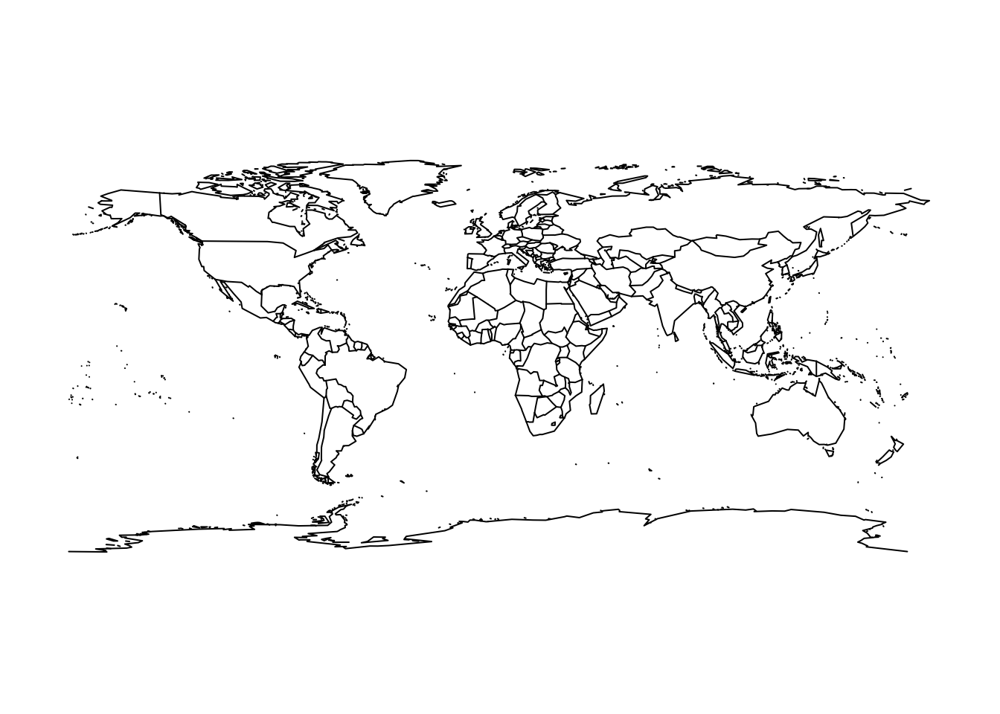
# usa boundaries
map("usa")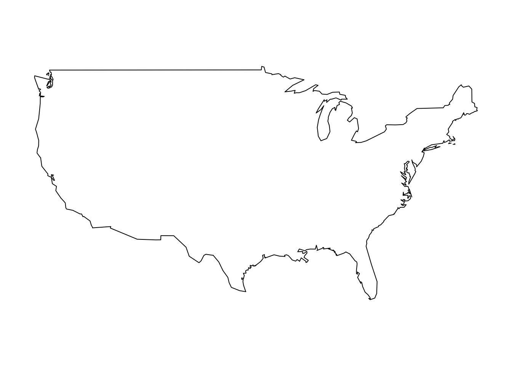
map("state")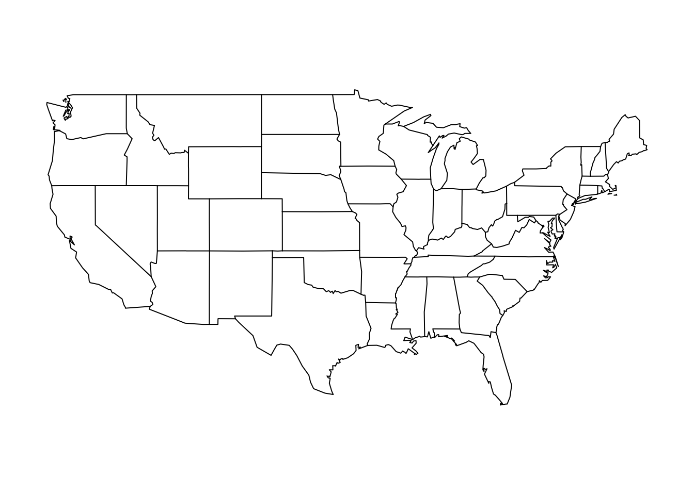
# county map of illinois
map("county", "illinois")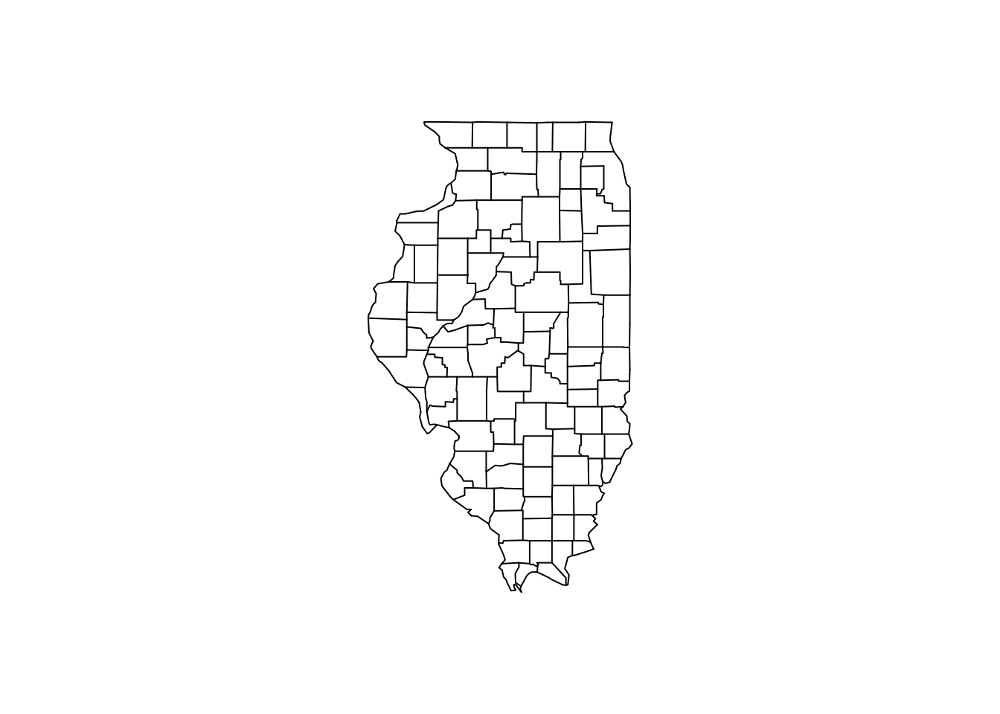
These are fine, but we’d rather use them with our friendly ggplot2 library. We can do this by converting the geodatabases into data frames for plotting with ggplot2.
# map of the world
map_data("world") %>%
as_tibble## # A tibble: 99,338 x 6
## long lat group order region subregion
## * <dbl> <dbl> <dbl> <int> <chr> <chr>
## 1 -69.9 12.5 1 1 Aruba <NA>
## 2 -69.9 12.4 1 2 Aruba <NA>
## 3 -69.9 12.4 1 3 Aruba <NA>
## 4 -70.0 12.5 1 4 Aruba <NA>
## 5 -70.1 12.5 1 5 Aruba <NA>
## 6 -70.1 12.6 1 6 Aruba <NA>
## 7 -70.0 12.6 1 7 Aruba <NA>
## 8 -70.0 12.6 1 8 Aruba <NA>
## 9 -69.9 12.5 1 9 Aruba <NA>
## 10 -69.9 12.5 1 10 Aruba <NA>
## # ... with 99,328 more rows# usa boundaries
map_data("usa") %>%
as_tibble## # A tibble: 7,243 x 6
## long lat group order region subregion
## * <dbl> <dbl> <dbl> <int> <chr> <chr>
## 1 -101 29.7 1 1 main <NA>
## 2 -101 29.7 1 2 main <NA>
## 3 -101 29.7 1 3 main <NA>
## 4 -101 29.6 1 4 main <NA>
## 5 -101 29.6 1 5 main <NA>
## 6 -101 29.6 1 6 main <NA>
## 7 -101 29.6 1 7 main <NA>
## 8 -101 29.6 1 8 main <NA>
## 9 -101 29.6 1 9 main <NA>
## 10 -101 29.6 1 10 main <NA>
## # ... with 7,233 more rowsmap_data("state") %>%
as_tibble## # A tibble: 15,537 x 6
## long lat group order region subregion
## * <dbl> <dbl> <dbl> <int> <chr> <chr>
## 1 -87.5 30.4 1 1 alabama <NA>
## 2 -87.5 30.4 1 2 alabama <NA>
## 3 -87.5 30.4 1 3 alabama <NA>
## 4 -87.5 30.3 1 4 alabama <NA>
## 5 -87.6 30.3 1 5 alabama <NA>
## 6 -87.6 30.3 1 6 alabama <NA>
## 7 -87.6 30.3 1 7 alabama <NA>
## 8 -87.6 30.3 1 8 alabama <NA>
## 9 -87.7 30.3 1 9 alabama <NA>
## 10 -87.8 30.3 1 10 alabama <NA>
## # ... with 15,527 more rows# county map of illinois
map_data("county", "illinois") %>%
as_tibble## # A tibble: 1,697 x 6
## long lat group order region subregion
## * <dbl> <dbl> <dbl> <int> <chr> <chr>
## 1 -91.5 40.2 1 1 illinois adams
## 2 -90.9 40.2 1 2 illinois adams
## 3 -90.9 40.2 1 3 illinois adams
## 4 -90.9 40.1 1 4 illinois adams
## 5 -90.9 39.8 1 5 illinois adams
## 6 -90.9 39.8 1 6 illinois adams
## 7 -91.4 39.8 1 7 illinois adams
## 8 -91.4 39.8 1 8 illinois adams
## 9 -91.4 39.9 1 9 illinois adams
## 10 -91.5 39.9 1 10 illinois adams
## # ... with 1,687 more rowsmap_data() converts the geodatabases into data frames where each row is a single point on the map. The resulting data frame contains the following variables:
long- longitude. Things to the west of the prime meridian are negativelat- latitudeorder- this identifies the orderggplot()should follow to “connect the dots” and draw the bordersregionandsubregionidentify what region or subregion a set of points surroundsgroup- this is perhaps the most important variable in the data frame.ggplot()uses thegroupaesthetic to determine whether adjacent points should be connected by a line. If they are in the same group, then the points are connected. If not, then they are not connected. This is the same basic principle for standardgeom_line()plots:library(gapminder) # no group aesthetic ggplot(gapminder, aes(year, lifeExp)) + geom_line()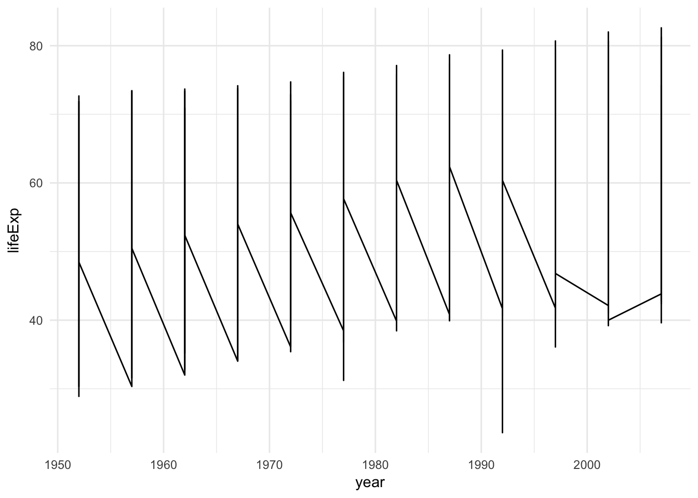
# with grouping by country ggplot(gapminder, aes(year, lifeExp, group = country)) + geom_line()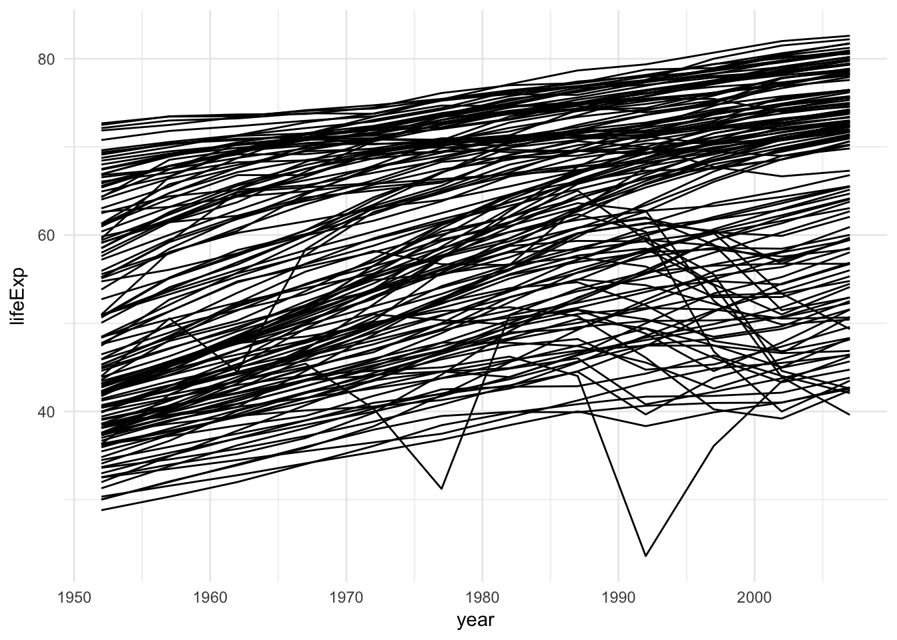
Note that
groupis not the same thing asregionorsubregion. If a region contains landmasses that are discontiguous, there should be multiple groups to properly draw the region:map("state", "michigan")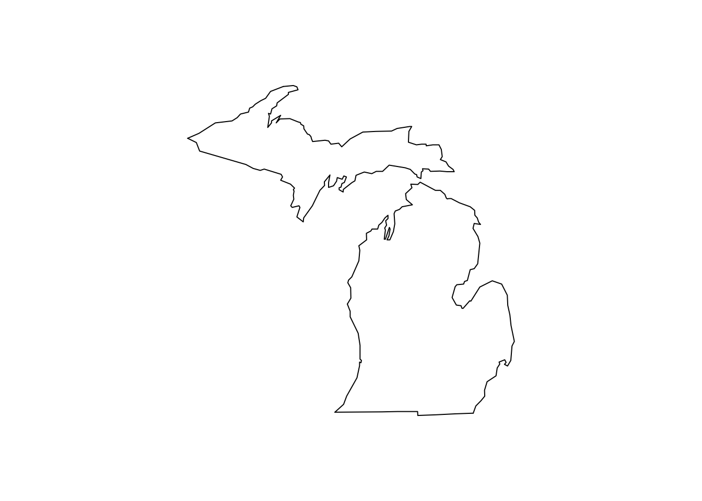
Drawing the United States
Let’s draw a map of the United States. First we need to store the USA map boundaries in a data frame:
usa <- as_tibble(map_data("usa"))
usa## # A tibble: 7,243 x 6
## long lat group order region subregion
## * <dbl> <dbl> <dbl> <int> <chr> <chr>
## 1 -101 29.7 1 1 main <NA>
## 2 -101 29.7 1 2 main <NA>
## 3 -101 29.7 1 3 main <NA>
## 4 -101 29.6 1 4 main <NA>
## 5 -101 29.6 1 5 main <NA>
## 6 -101 29.6 1 6 main <NA>
## 7 -101 29.6 1 7 main <NA>
## 8 -101 29.6 1 8 main <NA>
## 9 -101 29.6 1 9 main <NA>
## 10 -101 29.6 1 10 main <NA>
## # ... with 7,233 more rowsSimple black map
- We can use
geom_polygon()to draw lines between points and close them up (connect the last point with the first point) x = longandy = lat- We map the
groupaesthetic to thegroupcolumn
ggplot() +
geom_polygon(data = usa, aes(x = long, y = lat, group = group))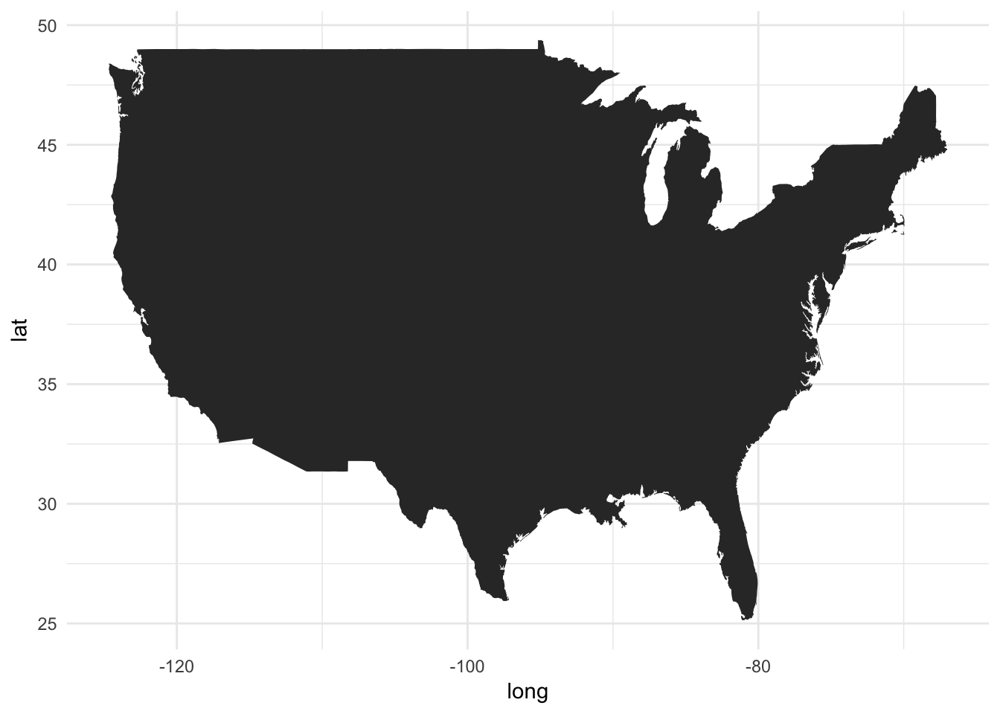
Ta-da! A few things we want to immediately start thinking about. First, because latitude and longitude have absolute relations to one another, we need to fix the aspect ratio so that we don’t accidentially compress the graph in one dimension. Fixing the aspect ratio also means that even if you change the outer dimensions of the graph (i.e. adjust the window size), then the aspect ratio of the graph itself remains unchanged. We can do this using the coord_fixed() function:
ggplot() +
geom_polygon(data = usa, aes(x = long, y = lat, group = group)) +
coord_fixed()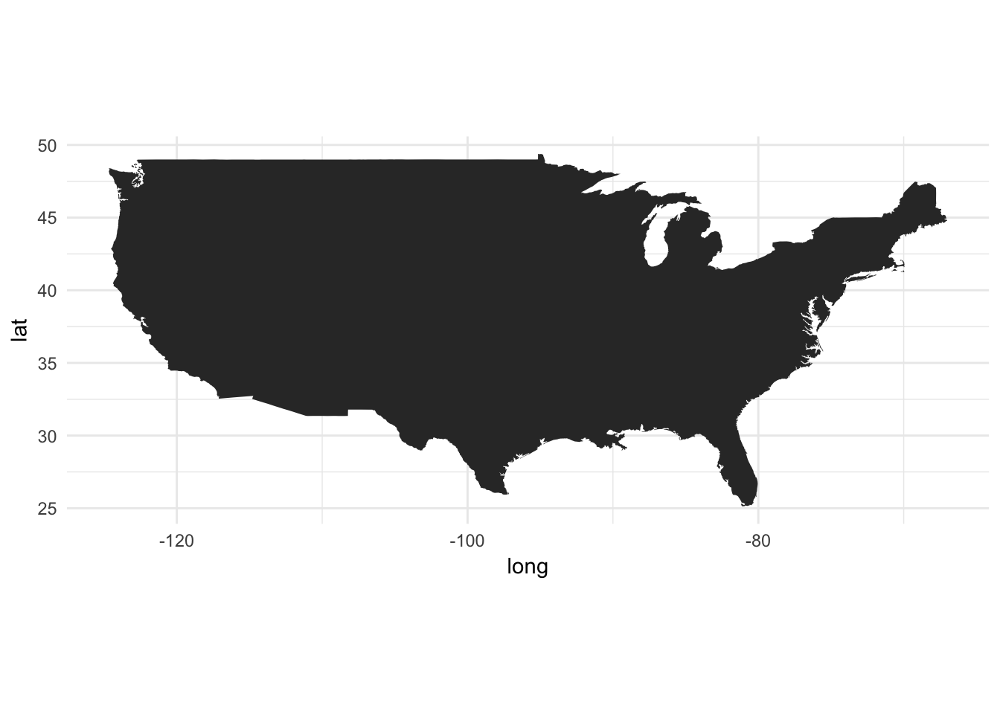
Now it looks a little squished. You can play around with the aspect ratio to find a better projection:2
ggplot() +
geom_polygon(data = usa, aes(x = long, y = lat, group = group)) +
coord_fixed(1.3)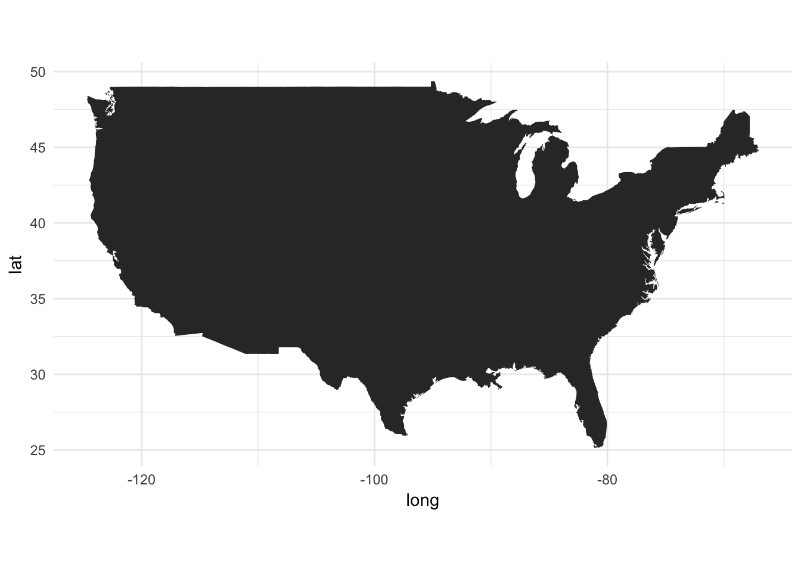
Change the colors
Since this is a ggplot() object, we can change the fill and color aesthetics for the map:
ggplot() +
geom_polygon(data = usa, aes(x = long, y = lat, group = group),
fill = NA, color = "red") +
coord_fixed(1.3)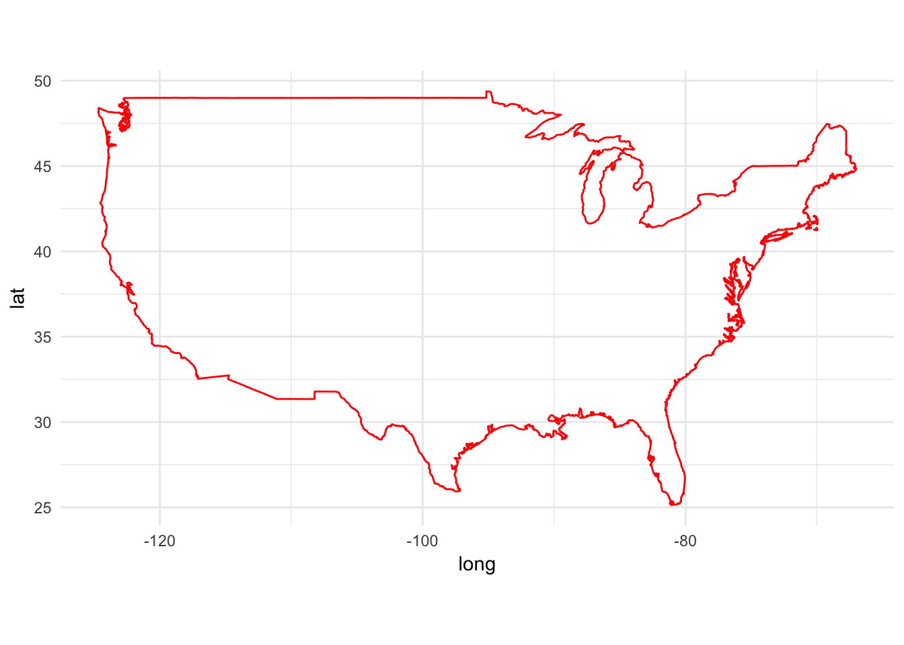
gg1 <- ggplot() +
geom_polygon(data = usa, aes(x = long, y = lat, group = group),
fill = "violet", color = "blue") +
coord_fixed(1.3)
gg1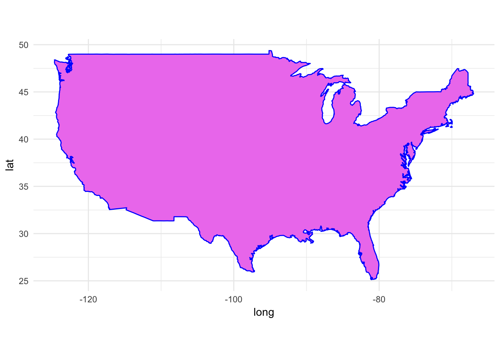
Always remember to use the group aesthetic
What happens if we plot the map without the group aesthetic?
ggplot() +
geom_polygon(data = usa, aes(x = long, y = lat),
fill = "violet", color = "blue") +
coord_fixed(1.3)Oops. The map doesn’t connect the dots in the correct order.
State maps
maps also comes with a state boundaries geodatabase:
states <- as_tibble(map_data("state"))
states## # A tibble: 15,537 x 6
## long lat group order region subregion
## * <dbl> <dbl> <dbl> <int> <chr> <chr>
## 1 -87.5 30.4 1 1 alabama <NA>
## 2 -87.5 30.4 1 2 alabama <NA>
## 3 -87.5 30.4 1 3 alabama <NA>
## 4 -87.5 30.3 1 4 alabama <NA>
## 5 -87.6 30.3 1 5 alabama <NA>
## 6 -87.6 30.3 1 6 alabama <NA>
## 7 -87.6 30.3 1 7 alabama <NA>
## 8 -87.6 30.3 1 8 alabama <NA>
## 9 -87.7 30.3 1 9 alabama <NA>
## 10 -87.8 30.3 1 10 alabama <NA>
## # ... with 15,527 more rowsBy default, each state is filled with the same color:
ggplot(data = states) +
geom_polygon(aes(x = long, y = lat, group = group), color = "white") +
coord_fixed(1.3)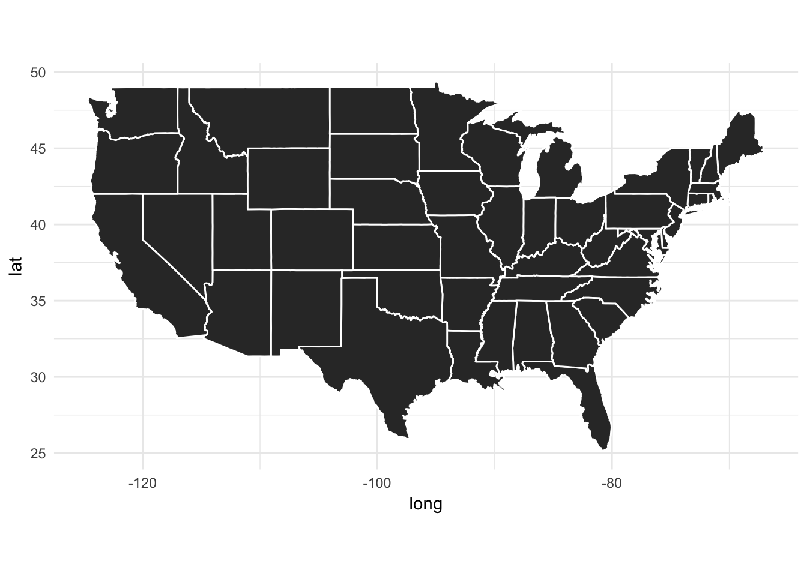
We can adjust this by using the fill aesthetic. Here, let’s map region to fill:
ggplot(data = states) +
geom_polygon(aes(x = long, y = lat, fill = region, group = group), color = "white") +
coord_fixed(1.3) +
# turn off color legend
theme(legend.position = "none")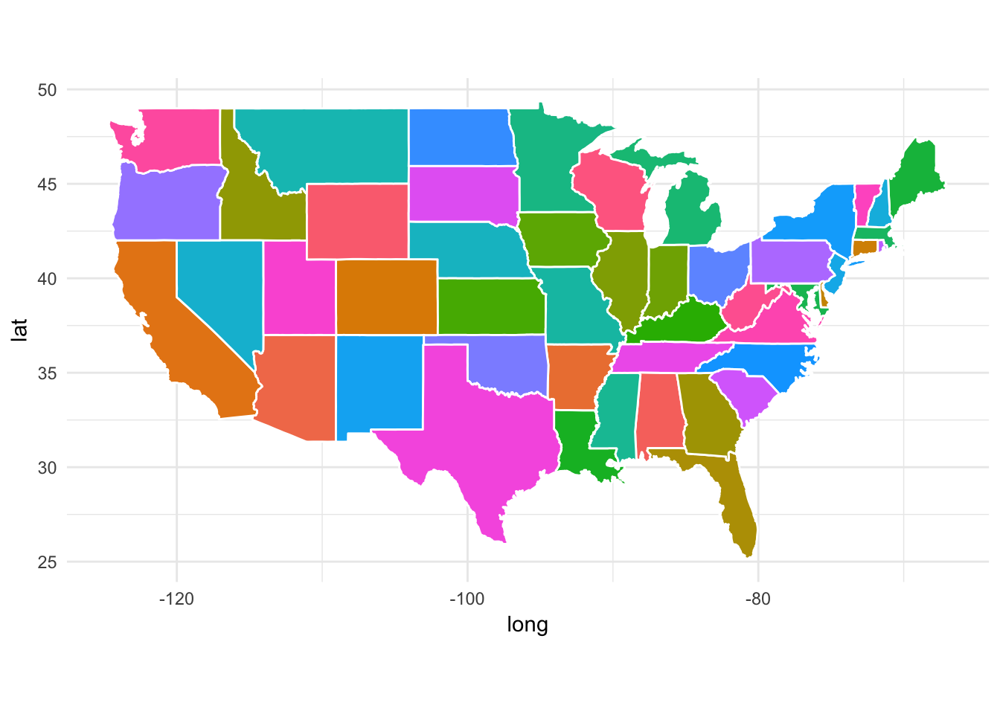
Here, each state is assigned a different color at random. You can start to imagine how we might build a choropleth by mapping a different variable to fill, but we’ll return to that in a little bit.
Plot a subset of states
We can use filter() to subset the states data frame and draw a map with only a subset of the states. For example, if we want to only graph states in the Midwest:
midwest <- filter(states,
region %in% c("illinois", "indiana", "iowa",
"kansas", "michigan", "minnesota",
"missouri", "nebraska", "north dakota",
"ohio", "south dakota", "wisconsin"))
ggplot(data = midwest) +
geom_polygon(aes(x = long, y = lat, group = group),
fill = "palegreen", color = "black") +
coord_fixed(1.3)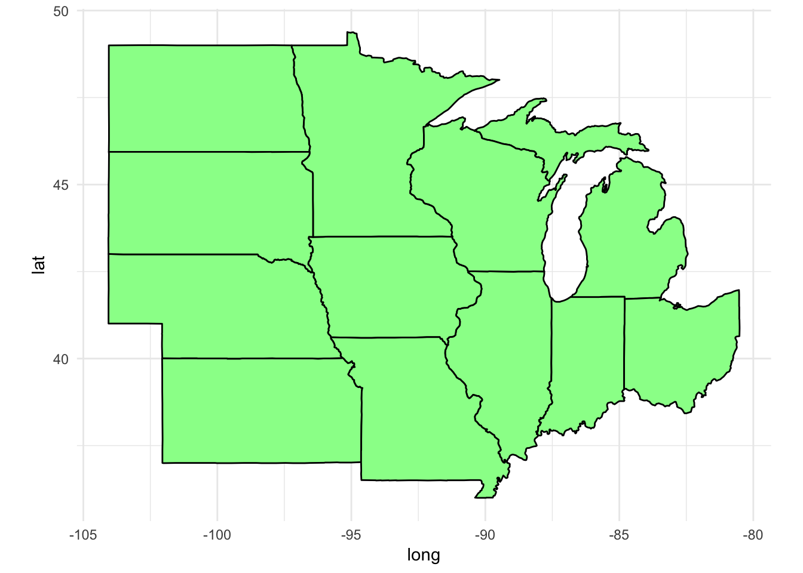
Zoom in on Illinois and its counties
First let’s get the Illinois boundaries:
il_df <- filter(states, region == "illinois")Now let’s get the accompanying counties:
counties <- as_tibble(map_data("county"))
il_county <- filter(counties, region == "illinois")
il_county## # A tibble: 1,696 x 6
## long lat group order region subregion
## <dbl> <dbl> <dbl> <int> <chr> <chr>
## 1 -91.5 40.2 561 21883 illinois adams
## 2 -90.9 40.2 561 21884 illinois adams
## 3 -90.9 40.1 561 21885 illinois adams
## 4 -90.9 39.8 561 21886 illinois adams
## 5 -90.9 39.8 561 21887 illinois adams
## 6 -91.4 39.8 561 21888 illinois adams
## 7 -91.4 39.8 561 21889 illinois adams
## 8 -91.4 39.9 561 21890 illinois adams
## 9 -91.5 39.9 561 21891 illinois adams
## 10 -91.4 39.9 561 21892 illinois adams
## # ... with 1,686 more rowsPlot the state first. This time, lets’ remove all the axes gridlines and background junk using theme_void():
il_base <- ggplot(data = il_df,
mapping = aes(x = long, y = lat, group = group)) +
coord_fixed(1.3) +
geom_polygon(color = "black", fill = "gray")
il_base +
theme_void()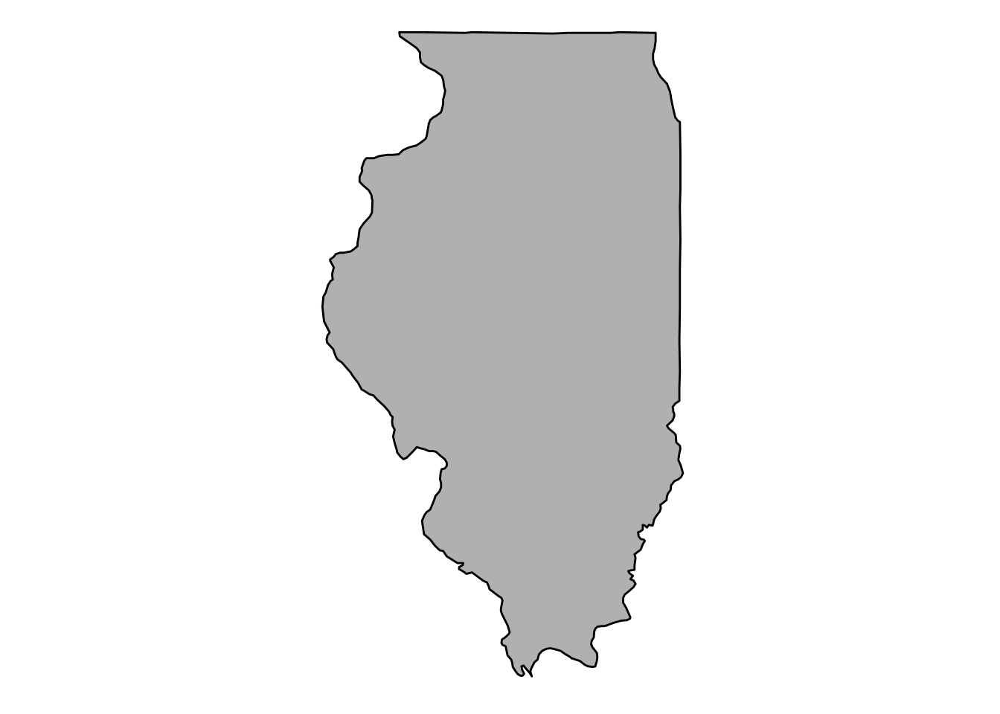
Now let’s plot the county boundaries in white:
il_base +
theme_void() +
geom_polygon(data = il_county, fill = NA, color = "white") +
# get the state border back on top
geom_polygon(color = "black", fill = NA)But what about Alaska and Hawaii?
If you were observant, you noticed map_data("states") only includes the 48 contiguous states in the United States. This is because Alaska and Hawaii exist far off from the rest of the states. What happens if you try to draw a map with them in it?
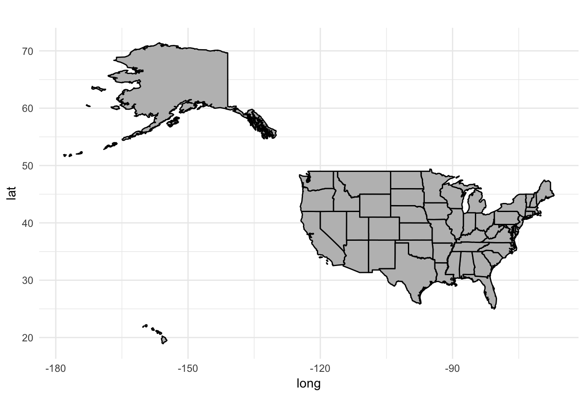
Yup, that doesn’t look right. Most maps of the United States place Alaska and Hawaii as insets to the south of California. Until recently, in R this was an extremely tedious task that required manually changing the latitude and longitude coordinates for these states to place them in the correct location. Fortunately a new package is available that has already done the work for you. fiftystater includes the fifty_states data frame which contains adjusted coordinates for Alaska and Hawaii to plot them with the mainland:
library(fiftystater)
data("fifty_states")
as_tibble(fifty_states)## # A tibble: 13,694 x 7
## long lat order hole piece id group
## <dbl> <dbl> <int> <lgl> <fctr> <chr> <fctr>
## 1 -85.1 32.0 1 FALSE 1 alabama Alabama.1
## 2 -85.1 31.9 2 FALSE 1 alabama Alabama.1
## 3 -85.1 31.9 3 FALSE 1 alabama Alabama.1
## 4 -85.1 31.8 4 FALSE 1 alabama Alabama.1
## 5 -85.1 31.8 5 FALSE 1 alabama Alabama.1
## 6 -85.1 31.7 6 FALSE 1 alabama Alabama.1
## 7 -85.1 31.7 7 FALSE 1 alabama Alabama.1
## 8 -85.1 31.7 8 FALSE 1 alabama Alabama.1
## 9 -85.1 31.6 9 FALSE 1 alabama Alabama.1
## 10 -85.0 31.6 10 FALSE 1 alabama Alabama.1
## # ... with 13,684 more rowsggplot(data = fifty_states, mapping = aes(x = long, y = lat, group = group)) +
coord_fixed(1.3) +
geom_polygon(color = "black", fill = "gray")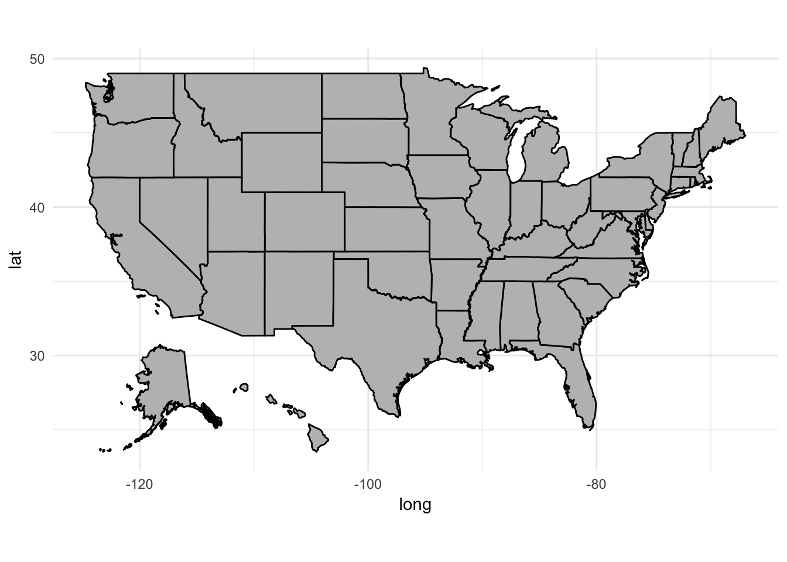
Using shapefiles
maps contains a very limited number of geodatabases. If you want to import a different country’s borders or some other geographic information, you will likely find the data in a shapefile. This is a special file format that encodes points, lines, and polygons in geographic space. Files appear with a .shp extension, sometimes with accompanying files ending in .dbf and .prj.
.shpstores the geographic coordinates of the geographic features (e.g. country, state, county).dbfstores data associated with the geographic features (e.g. unemployment rate, crime rates, percentage of votes cast for Donald Trump).prjstores information about the projection of the coordinates in the shapefile (we’ll handle this shortly)
Let’s start with a shapefile for state boundaries in the United States.3 We’ll use readOGR() from the rgdal package to read in the data file:
library(rgdal)
usa <- readOGR("data/census_bureau/cb_2013_us_state_20m/cb_2013_us_state_20m.shp")## OGR data source with driver: ESRI Shapefile
## Source: "data/census_bureau/cb_2013_us_state_20m/cb_2013_us_state_20m.shp", layer: "cb_2013_us_state_20m"
## with 52 features
## It has 9 fields
## Integer64 fields read as strings: ALAND AWATERstr(usa, max.level = 2) # view structure of object## Formal class 'SpatialPolygonsDataFrame' [package "sp"] with 5 slots
## ..@ data :'data.frame': 52 obs. of 9 variables:
## ..@ polygons :List of 52
## ..@ plotOrder : int [1:52] 32 48 29 3 18 46 33 22 34 51 ...
## ..@ bbox : num [1:2, 1:2] -179.1 17.9 179.8 71.4
## .. ..- attr(*, "dimnames")=List of 2
## ..@ proj4string:Formal class 'CRS' [package "sp"] with 1 slotThis is decidedly not a tidy data frame. Once you import the shapefile, it’s best to convert it to a data frame for ggplot(). We can do this using fortify():
fortify(usa) %>%
head()## long lat order hole piece id group
## 1 -88.5 31.9 1 FALSE 1 0 0.1
## 2 -88.5 31.9 2 FALSE 1 0 0.1
## 3 -88.5 31.9 3 FALSE 1 0 0.1
## 4 -88.5 31.9 4 FALSE 1 0 0.1
## 5 -88.5 32.0 5 FALSE 1 0 0.1
## 6 -88.5 32.0 6 FALSE 1 0 0.1Under this approach, the id variable is just a number assigned to each region (in this case, each state/territory). However the shapefile contains linked data with attributes for each region. We can access this using the @data accessor:
as_tibble(usa@data)## # A tibble: 52 x 9
## STATEFP STATENS AFFGEOID GEOID STUSPS NAME LSAD
## * <fctr> <fctr> <fctr> <fctr> <fctr> <fctr> <fctr>
## 1 01 01779775 0400000US01 01 AL Alabama 00
## 2 05 00068085 0400000US05 05 AR Arkansas 00
## 3 06 01779778 0400000US06 06 CA California 00
## 4 09 01779780 0400000US09 09 CT Connecticut 00
## 5 12 00294478 0400000US12 12 FL Florida 00
## 6 13 01705317 0400000US13 13 GA Georgia 00
## 7 16 01779783 0400000US16 16 ID Idaho 00
## 8 17 01779784 0400000US17 17 IL Illinois 00
## 9 18 00448508 0400000US18 18 IN Indiana 00
## 10 20 00481813 0400000US20 20 KS Kansas 00
## # ... with 42 more rows, and 2 more variables: ALAND <fctr>, AWATER <fctr>We can keep these variables in the new data frame through parameters to fortify(region = ""):
# state name
usa %>%
fortify(region = "NAME") %>%
head()## long lat order hole piece id group
## 1 -88.5 31.9 1 FALSE 1 Alabama Alabama.1
## 2 -88.5 31.9 2 FALSE 1 Alabama Alabama.1
## 3 -88.5 31.9 3 FALSE 1 Alabama Alabama.1
## 4 -88.5 31.9 4 FALSE 1 Alabama Alabama.1
## 5 -88.5 32.0 5 FALSE 1 Alabama Alabama.1
## 6 -88.5 32.0 6 FALSE 1 Alabama Alabama.1# FIPS code
usa %>%
fortify(region = "STATEFP") %>%
head()## long lat order hole piece id group
## 1 -88.5 31.9 1 FALSE 1 01 01.1
## 2 -88.5 31.9 2 FALSE 1 01 01.1
## 3 -88.5 31.9 3 FALSE 1 01 01.1
## 4 -88.5 31.9 4 FALSE 1 01 01.1
## 5 -88.5 32.0 5 FALSE 1 01 01.1
## 6 -88.5 32.0 6 FALSE 1 01 01.1# keep it all
(usa2 <- usa %>%
fortify(region = "NAME") %>%
as_tibble() %>%
left_join(usa@data, by = c("id" = "NAME")))## # A tibble: 46,174 x 15
## long lat order hole piece id group STATEFP STATENS
## <dbl> <dbl> <int> <lgl> <fctr> <chr> <fctr> <fctr> <fctr>
## 1 -88.5 31.9 1 FALSE 1 Alabama Alabama.1 01 01779775
## 2 -88.5 31.9 2 FALSE 1 Alabama Alabama.1 01 01779775
## 3 -88.5 31.9 3 FALSE 1 Alabama Alabama.1 01 01779775
## 4 -88.5 31.9 4 FALSE 1 Alabama Alabama.1 01 01779775
## 5 -88.5 32.0 5 FALSE 1 Alabama Alabama.1 01 01779775
## 6 -88.5 32.0 6 FALSE 1 Alabama Alabama.1 01 01779775
## 7 -88.5 32.1 7 FALSE 1 Alabama Alabama.1 01 01779775
## 8 -88.4 32.2 8 FALSE 1 Alabama Alabama.1 01 01779775
## 9 -88.4 32.2 9 FALSE 1 Alabama Alabama.1 01 01779775
## 10 -88.4 32.2 10 FALSE 1 Alabama Alabama.1 01 01779775
## # ... with 46,164 more rows, and 6 more variables: AFFGEOID <fctr>,
## # GEOID <fctr>, STUSPS <fctr>, LSAD <fctr>, ALAND <fctr>, AWATER <fctr>Now we can plot it like normal using ggplot():
ggplot(data = usa2, mapping = aes(x = long, y = lat, group = group)) +
coord_fixed(1.3) +
geom_polygon(color = "black", fill = "gray")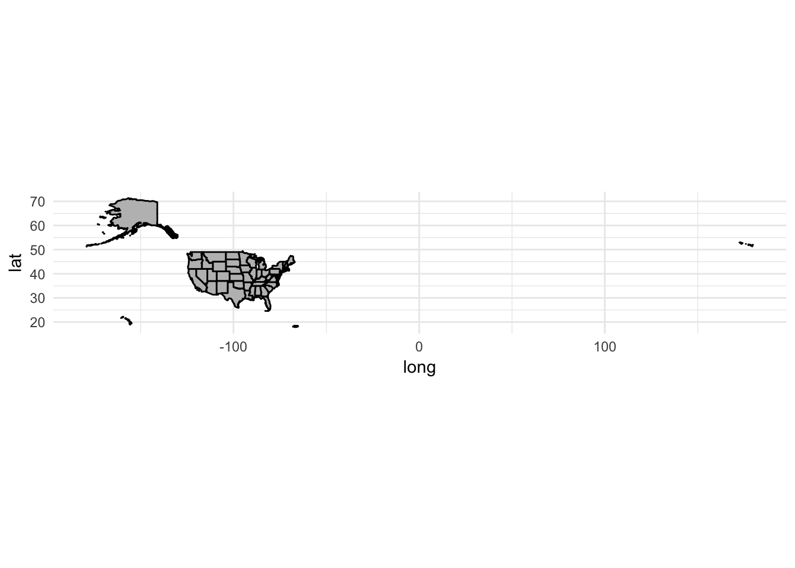
Because the data file comes from the Census Bureau, we also get boundaries for Alaska, Hawaii, and Puerto Rico. To remove them from the data, just use filter():
usa2 <- usa2 %>%
filter(id != "Alaska", id != "Hawaii", id != "Puerto Rico")
ggplot(data = usa2, mapping = aes(x = long, y = lat, group = group)) +
coord_fixed(1.3) +
geom_polygon(color = "black", fill = "gray")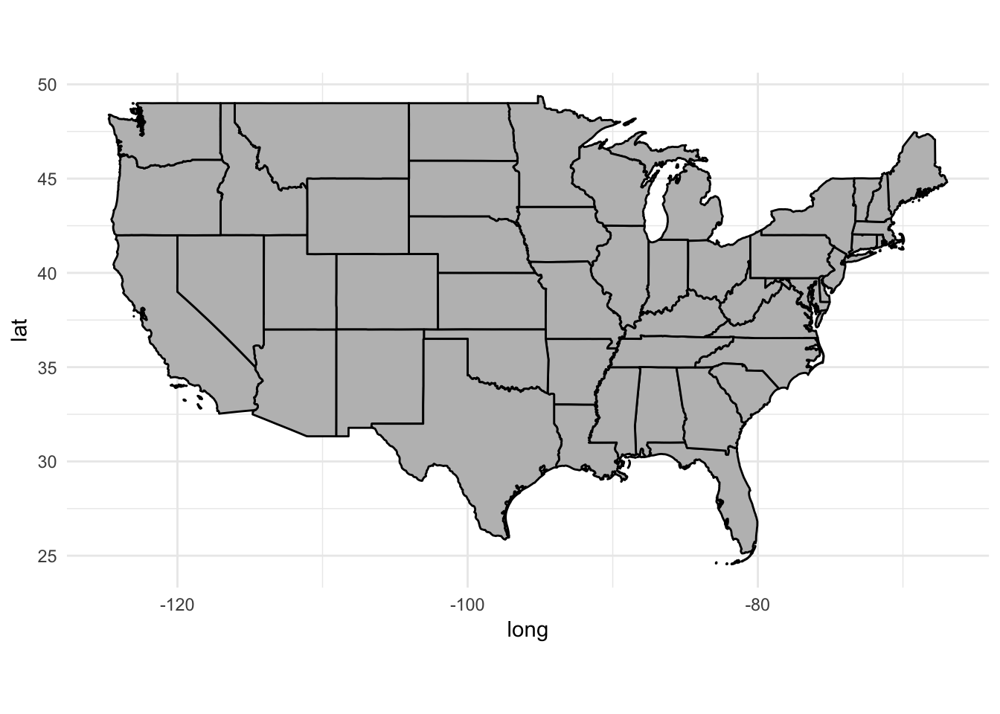
ggmap
Rather than relying on geodatabases or shapefiles which store boundaries as numeric data, we can use ggmap to retrieve raster map tiles from online mapping services. The most popular provider of these map tiles is Google Maps:
library(ggmap)get_googlemap("university of chicago", zoom = 12) %>%
ggmap()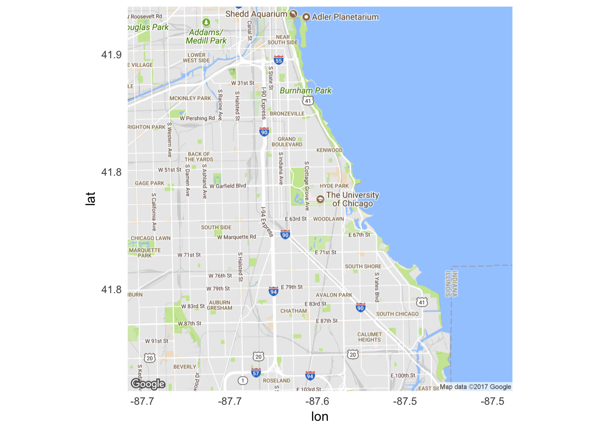
Changing map projections
Representing portions of the globe on a flat surface can be challenging. Depending on how you project the map, you can distort or emphasize certain features of the map. Fortunately, ggplot() includes the coord_map() function which allows us to easily implement different projection methods.4 Depending on the projection method, you may need to pass additional arguments to coord_map() to define the standard parallel lines used in projecting the map:
map_proj_base <- ggplot(data = usa2,
mapping = aes(x = long, y = lat, group = group)) +
geom_polygon(color = "black", fill = "gray")
map_proj_base +
coord_map() +
ggtitle("Mercator projection (default)")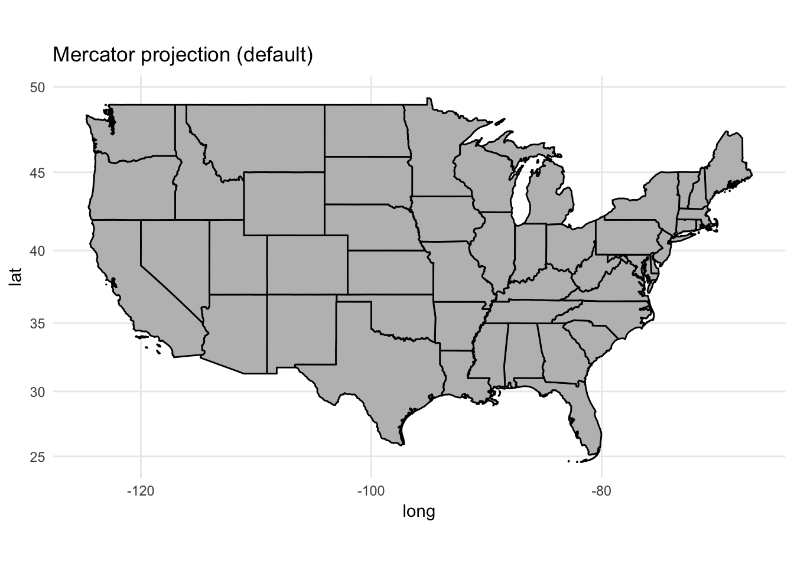
map_proj_base +
coord_map(projection = "albers", lat0 = 25, lat1 = 50) +
ggtitle("Albers equal-area projection")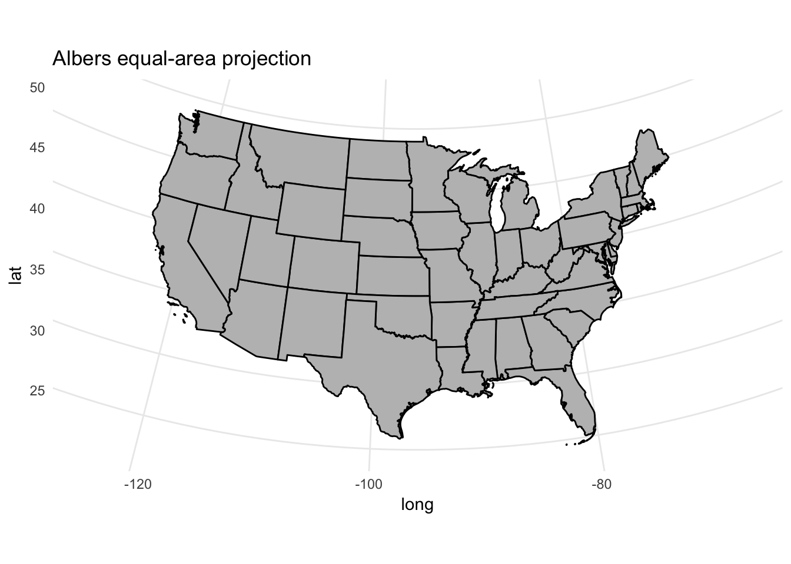
Adding data to the map
Region boundaries serve as the background in geospatial data visualization - so now we need to add data. Some types of geometric objects (points and symbols) are overlaid on top of the boundaries, whereas other geoms (fill) are incorporated into the region layer itself. Let’s look at the first type of object.
Points
Let’s use our usa2 map data to add some points. The airports data frame in the nycflights13 package includes geographic info on airports in the United States.
library(nycflights13)
airports## # A tibble: 1,458 x 8
## faa name lat lon alt tz dst
## <chr> <chr> <dbl> <dbl> <int> <dbl> <chr>
## 1 04G Lansdowne Airport 41.1 -80.6 1044 -5 A
## 2 06A Moton Field Municipal Airport 32.5 -85.7 264 -6 A
## 3 06C Schaumburg Regional 42.0 -88.1 801 -6 A
## 4 06N Randall Airport 41.4 -74.4 523 -5 A
## 5 09J Jekyll Island Airport 31.1 -81.4 11 -5 A
## 6 0A9 Elizabethton Municipal Airport 36.4 -82.2 1593 -5 A
## 7 0G6 Williams County Airport 41.5 -84.5 730 -5 A
## 8 0G7 Finger Lakes Regional Airport 42.9 -76.8 492 -5 A
## 9 0P2 Shoestring Aviation Airfield 39.8 -76.6 1000 -5 U
## 10 0S9 Jefferson County Intl 48.1 -122.8 108 -8 A
## # ... with 1,448 more rows, and 1 more variables: tzone <chr>Each airport has it’s geographic location encoded through lat and lon. To draw these points on the map, basically we draw a scatterplot with x = lon and y = lat. In fact we could simply do that:
ggplot(airports, aes(lon, lat)) +
geom_point()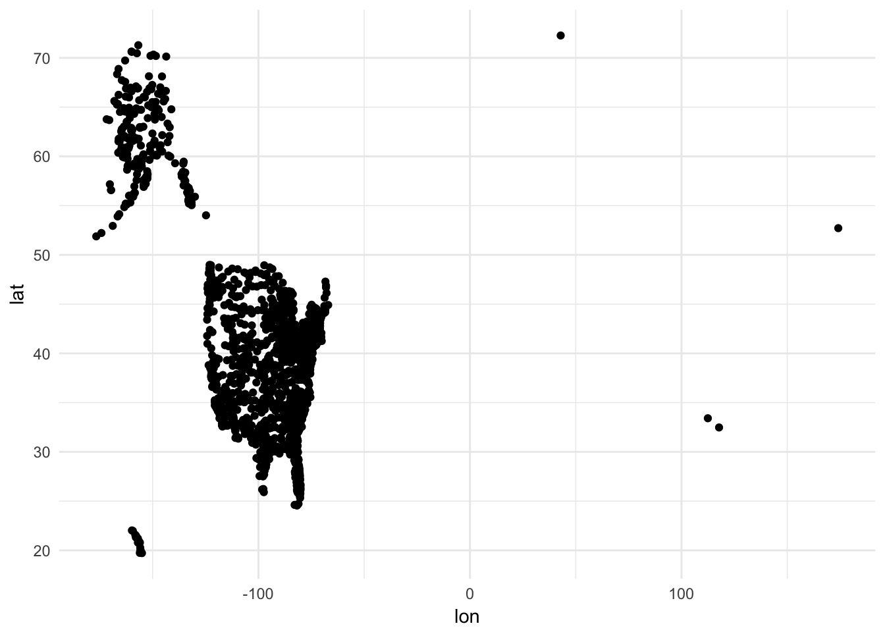
Let’s overlay it with the mapped state borders:
ggplot() +
coord_map() +
geom_polygon(data = usa2, mapping = aes(x = long, y = lat, group = group),
color = "black", fill = "gray") +
geom_point(data = airports, aes(x = lon, y = lat), shape = 1)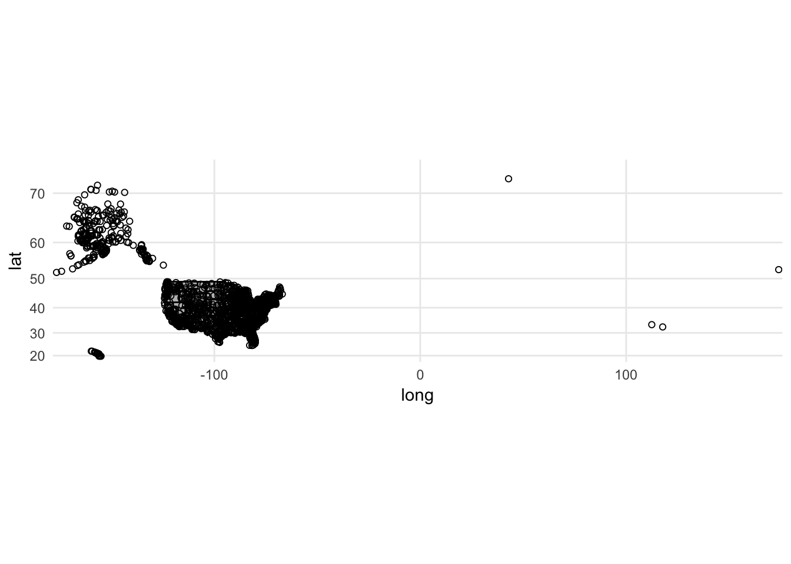
Slight problem. We have airports listed outside of the continental United States. There are a couple ways to rectify this. Unfortunately airports does not include a variable identifying state so the filter() operation is not that simple. The easiest solution is to crop the limits of the graph to only show the mainland:
ggplot() +
coord_map(xlim = c(-130, -60),
ylim = c(20, 50)) +
geom_polygon(data = usa2, mapping = aes(x = long, y = lat, group = group),
color = "black", fill = "gray") +
geom_point(data = airports, aes(x = lon, y = lat), shape = 1)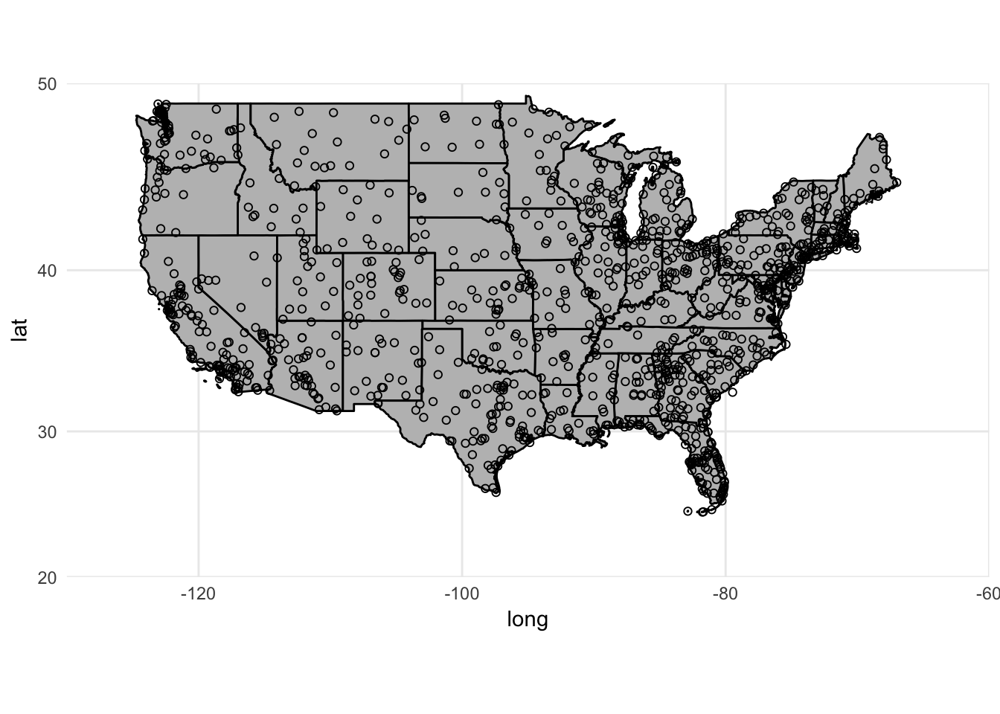
If we want to change the projection method, the points will automatically adjust too:
ggplot() +
coord_map(projection = "albers", lat0 = 25, lat1 = 50,
xlim = c(-130, -60),
ylim = c(20, 50)) +
geom_polygon(data = usa2, mapping = aes(x = long, y = lat, group = group),
color = "black", fill = "gray") +
geom_point(data = airports, aes(x = lon, y = lat), shape = 1)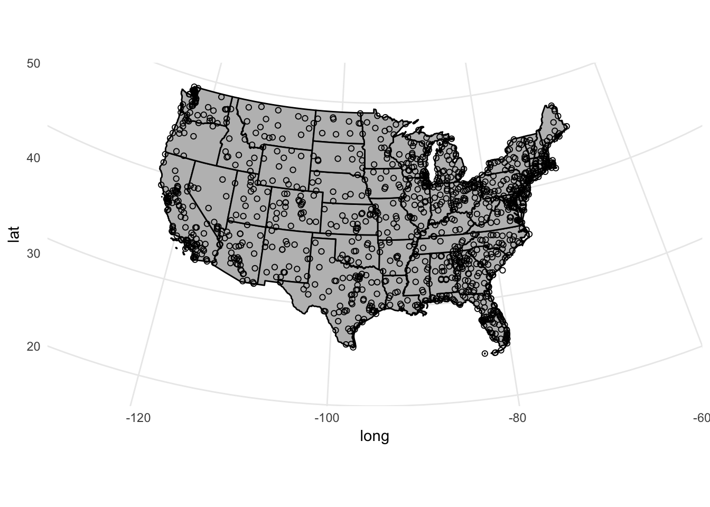
Symbols
We can change the size or type of symbols on the map. For instance, we can draw a bubble plot (also known as a proportional symbol map) and encode the altitude of the airport through the size channel:
ggplot() +
coord_map(xlim = c(-130, -60),
ylim = c(20, 50)) +
geom_polygon(data = usa2, mapping = aes(x = long, y = lat, group = group),
color = "black", fill = "white") +
geom_point(data = airports, aes(x = lon, y = lat, size = alt),
fill = "grey", color = "black", alpha = .2) +
# strip out background junk and remove legend
theme_void() +
theme(legend.position = "none")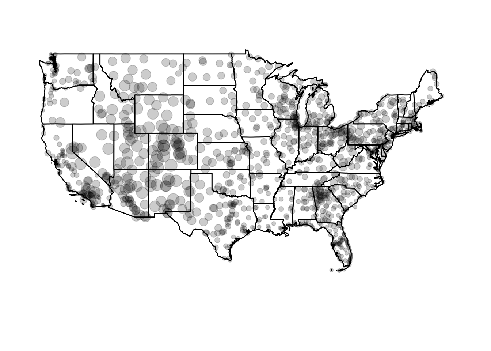
Circle area is proportional to the airport’s altitude (in feet). Or we could scale it based on the number of arriving flights in flights:
(airports_n <- flights %>%
count(dest) %>%
left_join(airports, by = c("dest" = "faa")))## # A tibble: 105 x 9
## dest n name lat lon alt tz
## <chr> <int> <chr> <dbl> <dbl> <int> <dbl>
## 1 ABQ 254 Albuquerque International Sunport 35.0 -106.6 5355 -7
## 2 ACK 265 Nantucket Mem 41.3 -70.1 48 -5
## 3 ALB 439 Albany Intl 42.7 -73.8 285 -5
## 4 ANC 8 Ted Stevens Anchorage Intl 61.2 -150.0 152 -9
## 5 ATL 17215 Hartsfield Jackson Atlanta Intl 33.6 -84.4 1026 -5
## 6 AUS 2439 Austin Bergstrom Intl 30.2 -97.7 542 -6
## 7 AVL 275 Asheville Regional Airport 35.4 -82.5 2165 -5
## 8 BDL 443 Bradley Intl 41.9 -72.7 173 -5
## 9 BGR 375 Bangor Intl 44.8 -68.8 192 -5
## 10 BHM 297 Birmingham Intl 33.6 -86.8 644 -6
## # ... with 95 more rows, and 2 more variables: dst <chr>, tzone <chr>ggplot() +
coord_map(xlim = c(-130, -60),
ylim = c(20, 50)) +
geom_polygon(data = usa2, mapping = aes(x = long, y = lat, group = group),
color = "black", fill = "white") +
geom_point(data = airports_n, aes(x = lon, y = lat, size = n),
fill = "grey", color = "black", alpha = .2) +
theme_void() +
theme(legend.position = "none")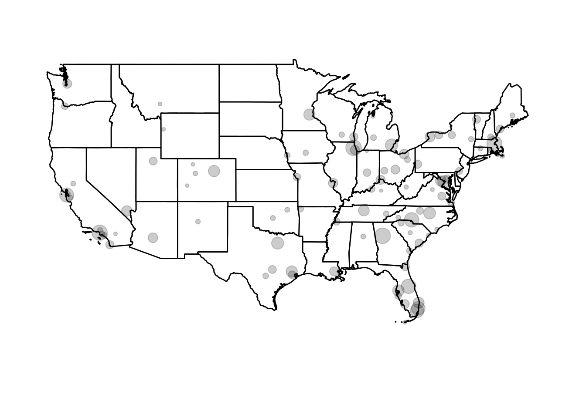
airportscontains a list of virtually all commercial airports in the United States. Howeverflightsonly contains data on flights departing from New York City airports (JFK, LaGuardia, or Newark) and only services a few airports around the country.
Drawing choropleth maps
Choropleth maps encode information by assigning shades of colors to defined areas on a map (e.g. countries, states, counties, zip codes). There are lots of ways to tweak and customize these graphs, which is generally a good idea because decoding and interpreting information conveyed via colorshades is notoriously tricky (if the color palette is a bad choice).
Loading the data
We’ll continue to use the usa2 shapefile. Let’s reload it and also load and tidy the county shapefile:
# load USA shapefile for map boundaries
usa <- readOGR("data/census_bureau/cb_2013_us_state_20m/cb_2013_us_state_20m.shp")## OGR data source with driver: ESRI Shapefile
## Source: "data/census_bureau/cb_2013_us_state_20m/cb_2013_us_state_20m.shp", layer: "cb_2013_us_state_20m"
## with 52 features
## It has 9 fields
## Integer64 fields read as strings: ALAND AWATER# fortify and filter to keep contiguous USA
usa2 <- usa %>%
fortify(region = "GEOID") %>%
as_tibble() %>%
left_join(usa@data, by = c("id" = "GEOID")) %>%
# filter out Alaska, Hawaii, Puerto Rico via FIPS codes
filter(!(STATEFP %in% c("02", "15", "72")))
# do the same thing for the county shapefile
counties <- readOGR("data/census_bureau/cb_2013_us_county_20m/cb_2013_us_county_20m.shp")## OGR data source with driver: ESRI Shapefile
## Source: "data/census_bureau/cb_2013_us_county_20m/cb_2013_us_county_20m.shp", layer: "cb_2013_us_county_20m"
## with 3221 features
## It has 9 fields
## Integer64 fields read as strings: ALAND AWATERcounties2 <- counties %>%
fortify(region = "GEOID") %>%
as_tibble() %>%
left_join(counties@data, by = c("id" = "GEOID")) %>%
# filter out Alaska, Hawaii, Puerto Rico via FIPS codes
filter(!(STATEFP %in% c("02", "15", "72")))
# plot county map boundaries
ggplot(counties2, mapping = aes(x = long, y = lat, group = group)) +
geom_polygon(color = "black", fill = "gray") +
coord_map()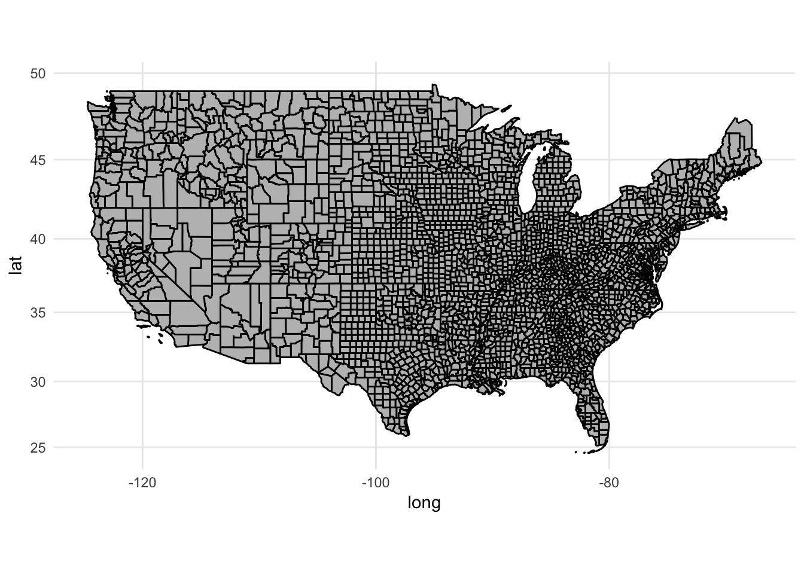
We’ll draw choropleths for the number of foreign-born individuals in each region (state or county). We can get those files from the census_bureau folder. Let’s also normalize our measure by the total population to get the rate of foreign-born individuals in the population:
(fb_state <- read_csv("data/census_bureau/ACS_13_5YR_B05012_state/ACS_13_5YR_B05012.csv") %>%
mutate(rate = HD01_VD03 / HD01_VD01))## # A tibble: 51 x 10
## GEO.id GEO.id2 `GEO.display-label` HD01_VD01 HD02_VD01 HD01_VD02
## <chr> <chr> <chr> <int> <chr> <int>
## 1 0400000US01 01 Alabama 4799277 <NA> 4631045
## 2 0400000US02 02 Alaska 720316 <NA> 669941
## 3 0400000US04 04 Arizona 6479703 <NA> 5609835
## 4 0400000US05 05 Arkansas 2933369 <NA> 2799972
## 5 0400000US06 06 California 37659181 <NA> 27483342
## 6 0400000US08 08 Colorado 5119329 <NA> 4623809
## 7 0400000US09 09 Connecticut 3583561 <NA> 3096374
## 8 0400000US10 10 Delaware 908446 <NA> 831683
## 9 0400000US11 11 District of Columbia 619371 <NA> 534142
## 10 0400000US12 12 Florida 19091156 <NA> 15392410
## # ... with 41 more rows, and 4 more variables: HD02_VD02 <int>,
## # HD01_VD03 <int>, HD02_VD03 <int>, rate <dbl>(fb_county <- read_csv("data/census_bureau/ACS_13_5YR_B05012_county/ACS_13_5YR_B05012.csv") %>%
mutate(rate = HD01_VD03 / HD01_VD01))## # A tibble: 3,143 x 10
## GEO.id GEO.id2 `GEO.display-label` HD01_VD01 HD02_VD01
## <chr> <chr> <chr> <int> <int>
## 1 0500000US01001 01001 Autauga County, Alabama 54907 NA
## 2 0500000US01003 01003 Baldwin County, Alabama 187114 NA
## 3 0500000US01005 01005 Barbour County, Alabama 27321 NA
## 4 0500000US01007 01007 Bibb County, Alabama 22754 NA
## 5 0500000US01009 01009 Blount County, Alabama 57623 NA
## 6 0500000US01011 01011 Bullock County, Alabama 10746 NA
## 7 0500000US01013 01013 Butler County, Alabama 20624 NA
## 8 0500000US01015 01015 Calhoun County, Alabama 117714 NA
## 9 0500000US01017 01017 Chambers County, Alabama 34145 NA
## 10 0500000US01019 01019 Cherokee County, Alabama 26034 NA
## # ... with 3,133 more rows, and 5 more variables: HD01_VD02 <int>,
## # HD02_VD02 <int>, HD01_VD03 <int>, HD02_VD03 <int>, rate <dbl>Joining the data to regions
Now that we have our data, we want to draw it on the map. To do that, we have to join together our data sources - the shapefiles and the CSVs. Normally joining data files requires a _join() operation of some sort. However when using ggplot2, we don’t have to do this. Remember that we can pass different data frames into different layers of a ggplot() object. Rather than using geom_polygon() to draw our maps, now we switch to geom_map():
ggplot(fb_state, aes(map_id = GEO.id2)) +
geom_map(aes(fill = rate), map = usa2) +
expand_limits(x = usa2$long, y = usa2$lat)
Let’s break down what just happened:
fb_stateis the data frame with the variables we want to visualizemap_id = GEO.id2identifies the column infb_statethat uniquely matches each observation to a region inusa2geom_map(aes(fill = rate), map = usa2)fill = rateidentifies the column infb_statewe will use to determine the color of each regionmap = usa2is the data frame containing the boundary coordinates
expand_limits(x = usa2$long, y = usa2$lat)ensures the graph is drawn to the proper window. Because the default data frame for thisggplot()object isfb_state, it won’t contain the necessary information to size the window
We can then tweak this up by adding a title, removing the background (but retaining the legend), and projecting the map using a different method:
ggplot(fb_state, aes(map_id = GEO.id2)) +
geom_map(aes(fill = rate), map = usa2) +
expand_limits(x = usa2$long, y = usa2$lat) +
scale_fill_continuous(labels = scales::percent) +
labs(title = "Rate of foreign-born individuals in the population",
fill = NULL) +
ggthemes::theme_map() +
coord_map(projection = "albers", lat0 = 25, lat1 = 50)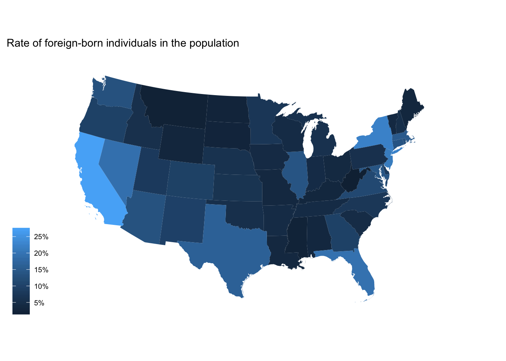
We could do the same thing for the county-level data:
ggplot(fb_county, aes(map_id = GEO.id2)) +
geom_map(aes(fill = rate), map = counties2) +
expand_limits(x = counties2$long, y = counties2$lat) +
scale_fill_continuous(labels = scales::percent) +
labs(title = "Rate of foreign-born individuals in the population",
fill = NULL) +
ggthemes::theme_map() +
coord_map(projection = "albers", lat0 = 25, lat1 = 50)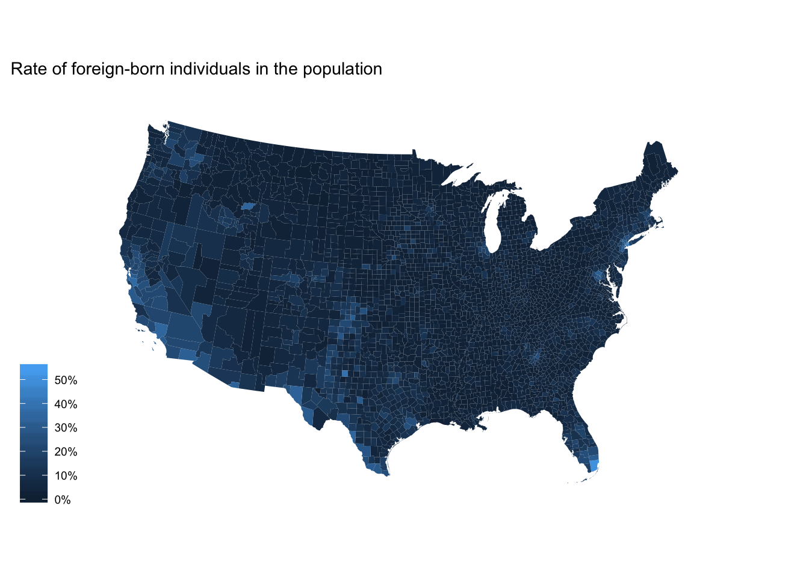
Binning data
Remember
cut()? There are someggplot2variants on this function that more explicitly identify how we want to bin the numeric vector (column).
cut_interval()- makesngroups with equal range
fb_county %>%
mutate(rate_cut = cut_interval(rate, 6)) %>%
ggplot(aes(map_id = GEO.id2)) +
geom_map(aes(fill = rate_cut), map = counties2) +
expand_limits(x = counties2$long, y = counties2$lat) +
labs(title = "Rate of foreign-born individuals in the population",
fill = NULL) +
ggthemes::theme_map() +
coord_map(projection = "albers", lat0 = 25, lat1 = 50)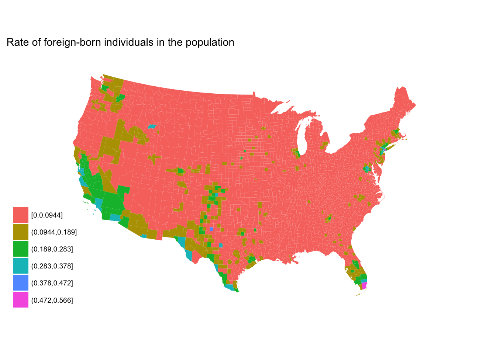
cut_number()- makesngroups with (approximately) equal numbers of observations
fb_county %>%
mutate(rate_cut = cut_number(rate, 6)) %>%
ggplot(aes(map_id = GEO.id2)) +
geom_map(aes(fill = rate_cut), map = counties2) +
expand_limits(x = counties2$long, y = counties2$lat) +
labs(title = "Rate of foreign-born individuals in the population",
fill = NULL) +
ggthemes::theme_map() +
coord_map(projection = "albers", lat0 = 25, lat1 = 50)
Defining colors
Selection of your color palette is perhaps the most important decision to make when drawing a choropleth.
By default, ggplot2 picks evenly spaced hues around the Hue-Chroma-Luminance (HCL) color space:5
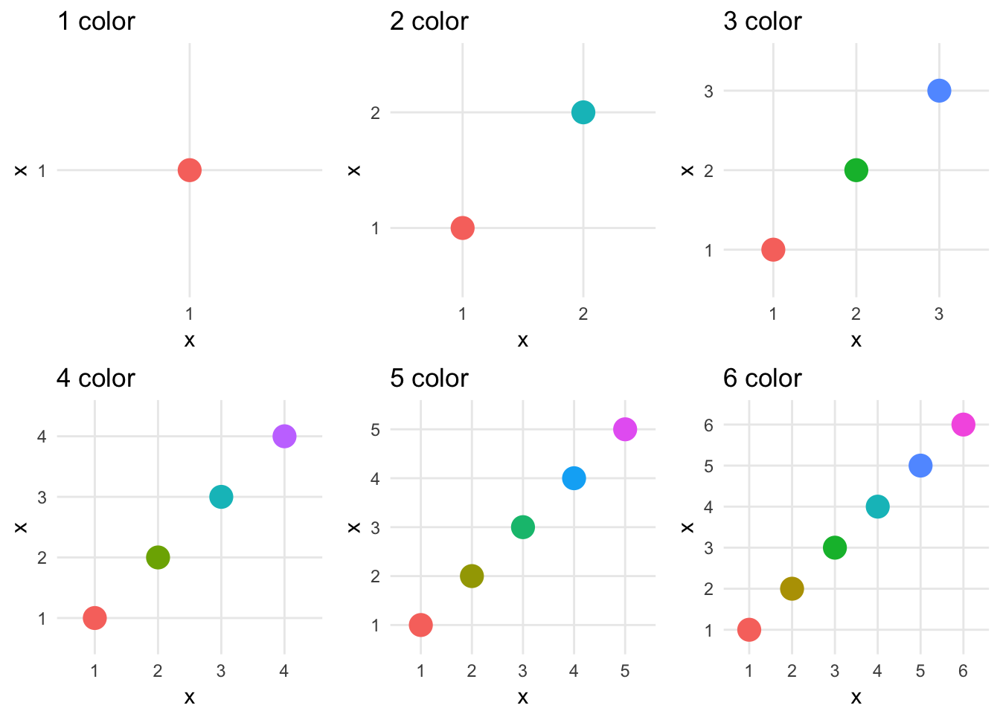
ggplot2 gives you many different ways of defining and customizing your scale_color_ and scale_fill_ palettes, but will not tell you if they are optimal for your specific usage in the graph.
RColorBrewer
Color Brewer is a diagnostic tool for selecting optimal color palettes for maps with discrete variables. The authors have generated different color palettes designed to make differentiating between categories easy depending on the scaling of your variable. All you need to do is define the number of categories in the variable, the nature of your data (sequential, diverging, or qualitative), and a color scheme. There are also options to select palettes that are colorblind safe, print friendly, and photocopy safe. Depending on the combination of options, you may not find any color palette that matches your criteria. In such a case, consider reducing the number of data classes.
Sequential
# define ggplot object
seq_plot <- fb_county %>%
mutate(rate_cut = cut_number(rate, 6)) %>%
ggplot(aes(map_id = GEO.id2)) +
geom_map(aes(fill = rate_cut), map = counties2) +
expand_limits(x = counties2$long, y = counties2$lat) +
labs(title = "Rate of foreign-born individuals in the population",
fill = NULL) +
ggthemes::theme_map() +
coord_map(projection = "albers", lat0 = 25, lat1 = 50)
seq_plot +
scale_fill_brewer(palette = "BuGn")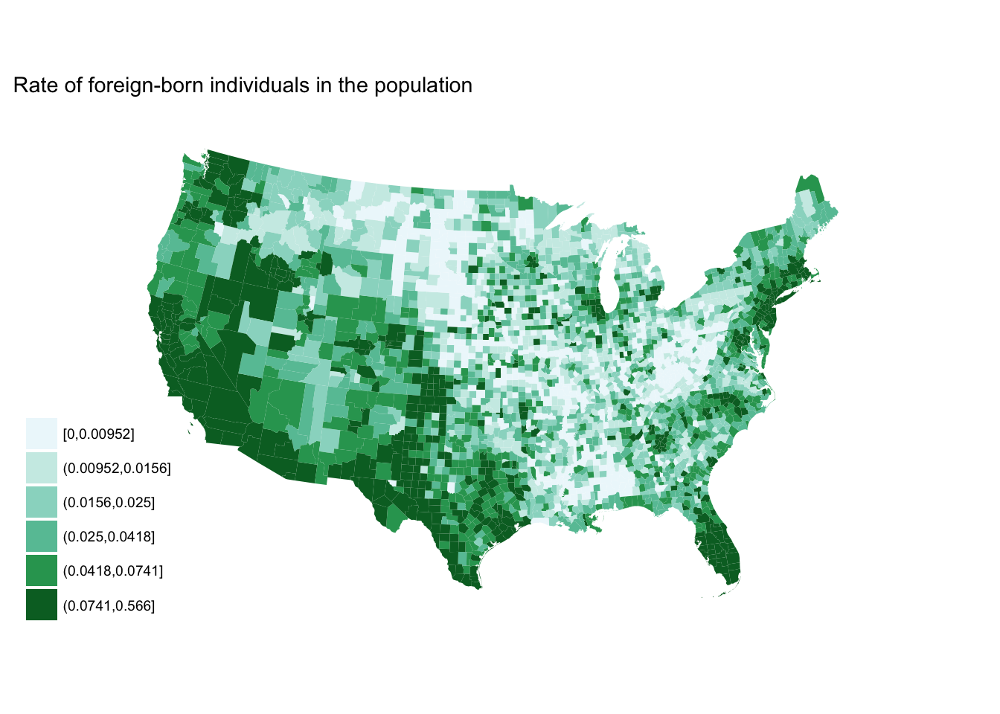
seq_plot +
scale_fill_brewer(palette = "YlGn")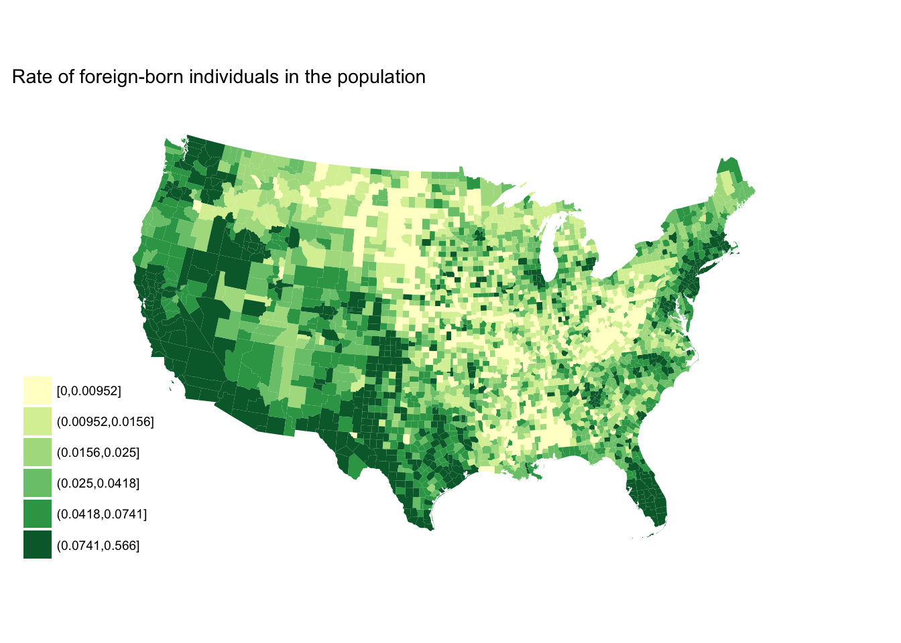
seq_plot +
scale_fill_brewer(palette = "Blues")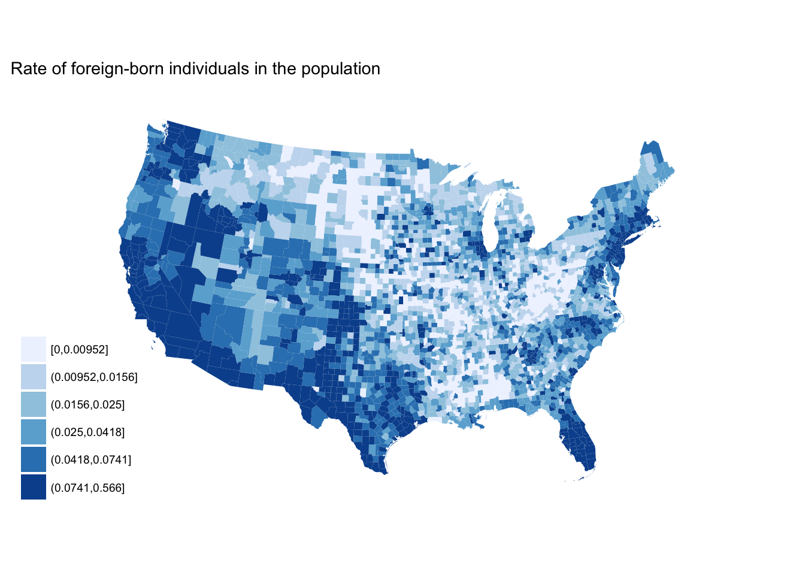
Qualitative
state_data <- data_frame(name = state.name,
region = state.region,
subregion = state.division,
abb = state.abb) %>%
bind_cols(as_tibble(state.x77)) %>%
# get id variable into data frame
left_join(usa2 %>%
select(id, NAME) %>%
distinct(),
by = c("name" = "NAME")) %>%
# remove Alaska and Hawaii
na.omit()
# set region base plot
region_p <- ggplot(state_data, aes(map_id = id)) +
geom_map(aes(fill = region), map = usa2) +
expand_limits(x = usa2$long, y = usa2$lat) +
labs(fill = NULL) +
ggthemes::theme_map() +
coord_map(projection = "albers", lat0 = 25, lat1 = 50)
region_p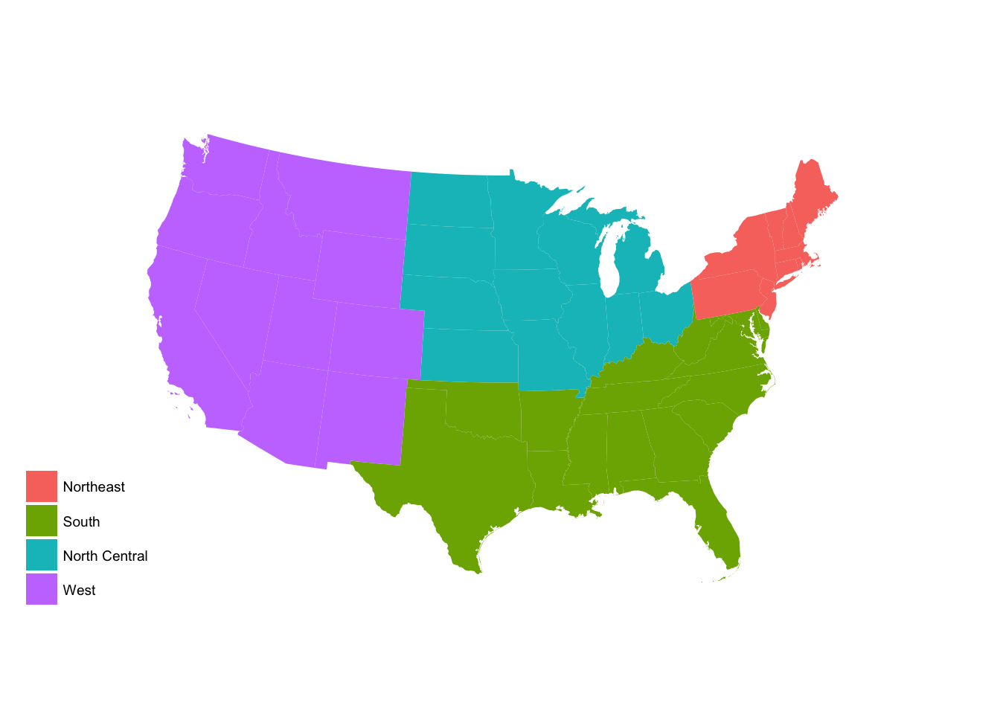
# try different color brewers
region_p +
scale_fill_brewer(palette = "Paired")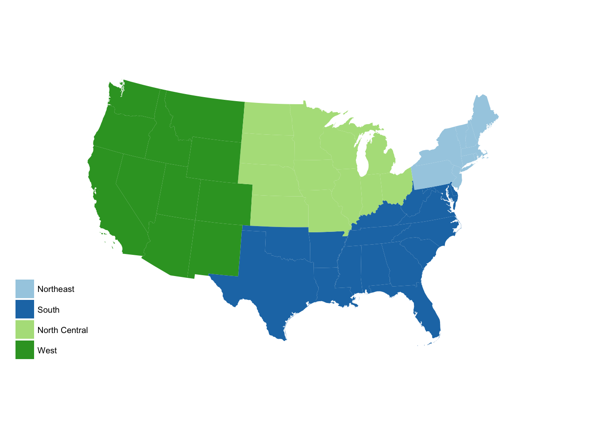
region_p +
scale_fill_brewer(palette = "Dark2")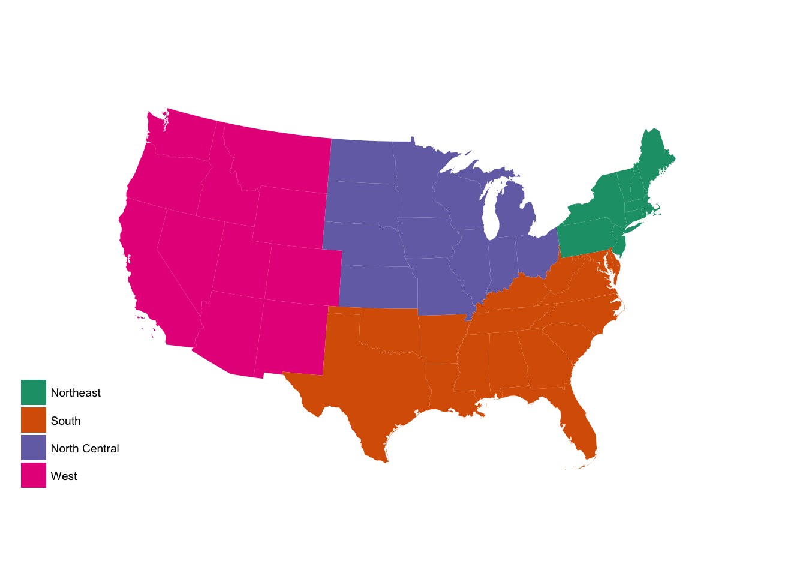
region_p +
scale_fill_brewer(palette = "Pastel2")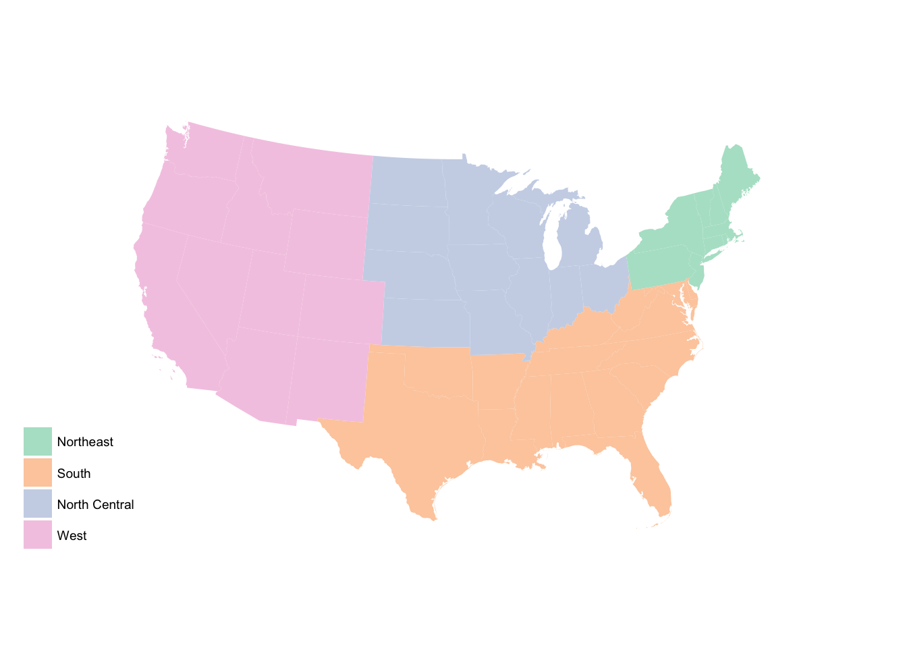
# set subregion base plot
subregion_p <- ggplot(state_data, aes(map_id = id)) +
geom_map(aes(fill = subregion), map = usa2) +
expand_limits(x = usa2$long, y = usa2$lat) +
labs(fill = NULL) +
ggthemes::theme_map() +
coord_map(projection = "albers", lat0 = 25, lat1 = 50)
subregion_p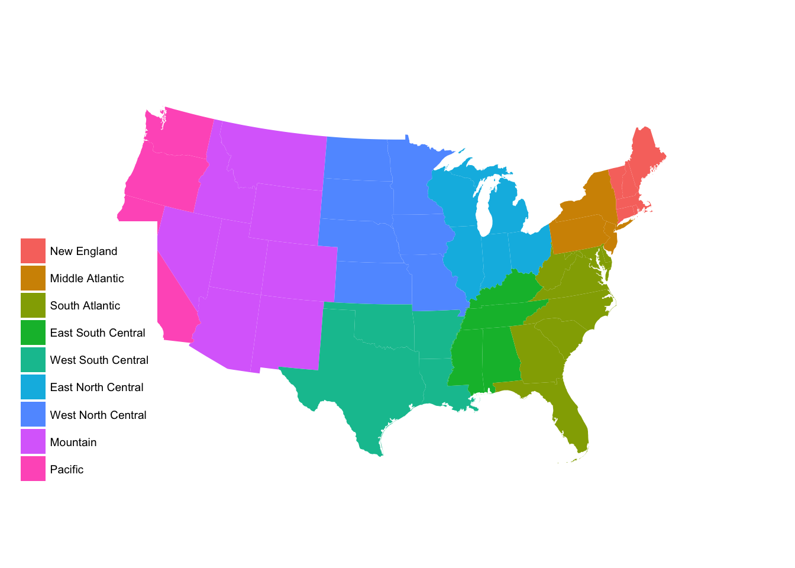
subregion_p +
scale_fill_brewer(palette = "Paired")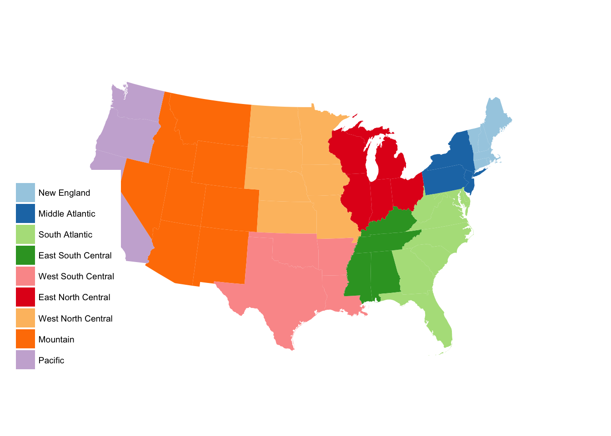
subregion_p +
scale_fill_brewer(palette = "Set1")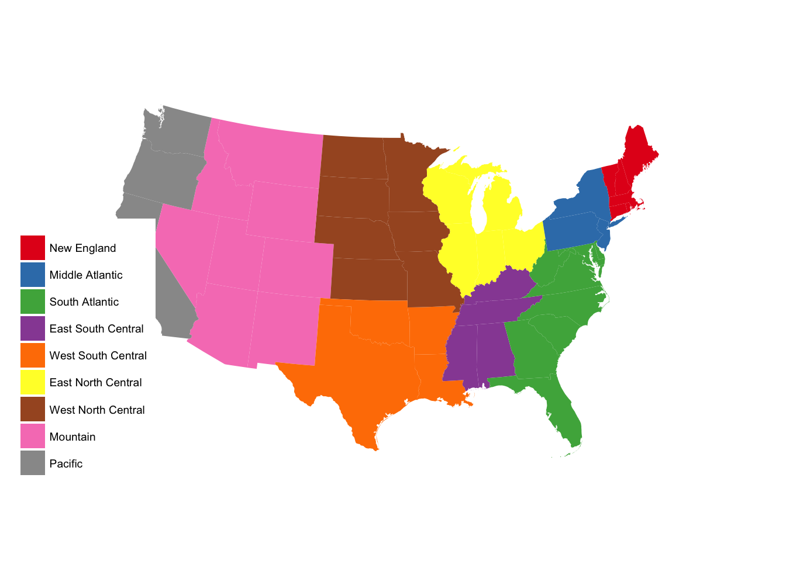
subregion_p +
scale_fill_brewer(palette = "Pastel1")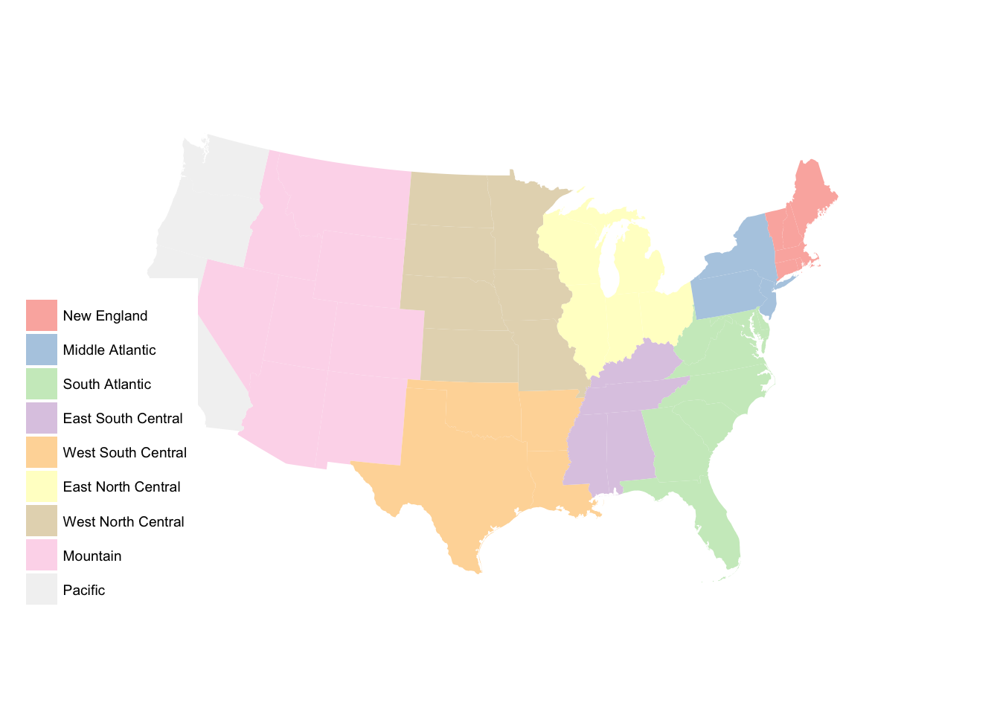
Faceting maps
If you have geospatial data with a temporal component (i.e. measuring a variable in a country over a period of time) and want to incorporate the temporal data into your visualization, we have a few different options available. Let’s demonstrate using data on world fertility rates and a world map.
Get world fertility rate data
# import and fortify world shapefile
world <- readOGR("data/nautral_earth/ne_110m_admin_0_countries/ne_110m_admin_0_countries.shp")## OGR data source with driver: ESRI Shapefile
## Source: "data/nautral_earth/ne_110m_admin_0_countries/ne_110m_admin_0_countries.shp", layer: "ne_110m_admin_0_countries"
## with 177 features
## It has 63 fieldsworld2 <- fortify(world, region = "iso_a3")
# Country-level data
(fertility <- read_csv("data/API_SP.DYN.TFRT.IN_DS2_en_csv_v2/API_SP.DYN.TFRT.IN_DS2_en_csv_v2.csv") %>%
select(-X62) %>%
# tidy the data frame
gather(year, fertility, `1960`:`2016`, convert = TRUE) %>%
filter(year < 2015) %>%
mutate(fertility = as.numeric(fertility),
# cut into six intervals
fertility_rate = cut_interval(fertility, 6)))## # A tibble: 14,520 x 7
## `Country Name` `Country Code`
## <chr> <chr>
## 1 Aruba ABW
## 2 Andorra AND
## 3 Afghanistan AFG
## 4 Angola AGO
## 5 Albania ALB
## 6 Arab World ARB
## 7 United Arab Emirates ARE
## 8 Argentina ARG
## 9 Armenia ARM
## 10 American Samoa ASM
## # ... with 14,510 more rows, and 5 more variables: `Indicator Name` <chr>,
## # `Indicator Code` <chr>, year <int>, fertility <dbl>,
## # fertility_rate <fctr>Separate images
If we want each map stored in a separate image, we could write a standard iterative operation using techniques we already know.
For loop
for(year in seq(from = 1970, to = 2010, by = 5)){
p <- fertility %>%
filter(year == year) %>%
ggplot(aes(map_id = `Country Code`)) +
geom_map(aes(fill = fertility_rate), map = world2) +
expand_limits(x = world2$long, y = world2$lat) +
scale_fill_brewer(palette = "BuGn") +
labs(title = "Fertility rate",
subtitle = year,
fill = NULL) +
ggthemes::theme_map() +
coord_map(projection = "mollweide", xlim = c(-180, 180))
print(p)
}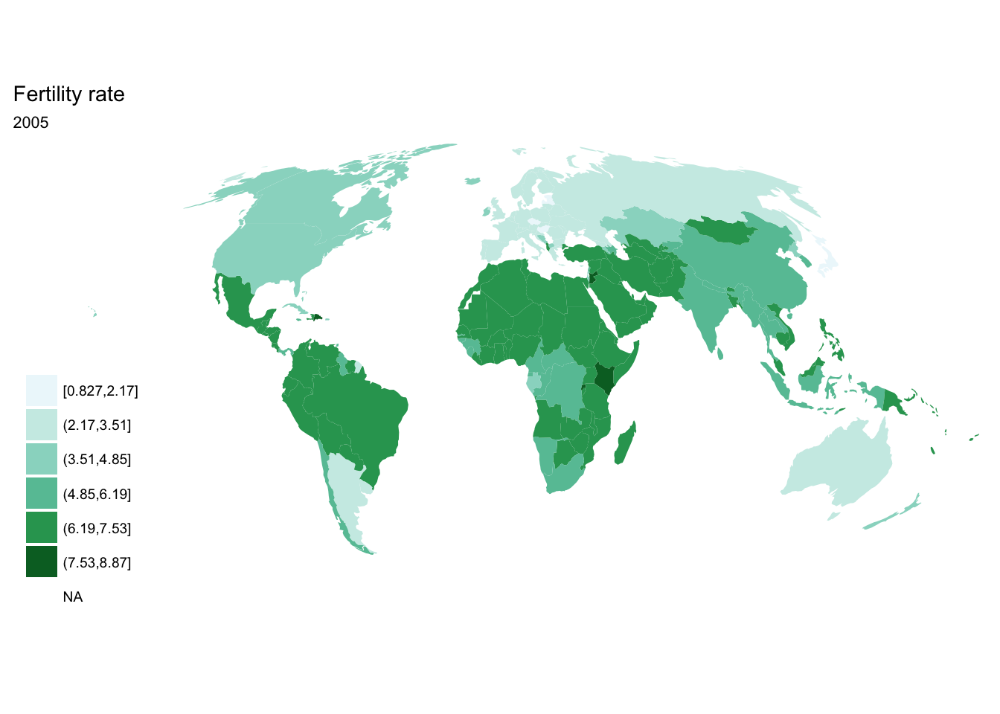
purrr::map()
seq(from = 1970, to = 2010, by = 5) %>%
purrr::map(~ fertility %>%
filter(year == .x) %>%
ggplot(aes(map_id = `Country Code`)) +
geom_map(aes(fill = fertility_rate), map = world2) +
expand_limits(x = world2$long, y = world2$lat) +
scale_fill_brewer(palette = "BuGn") +
labs(title = "Fertility rate",
subtitle = .x,
fill = NULL) +
ggthemes::theme_map() +
coord_map(projection = "mollweide", xlim = c(-180, 180)))## [[1]]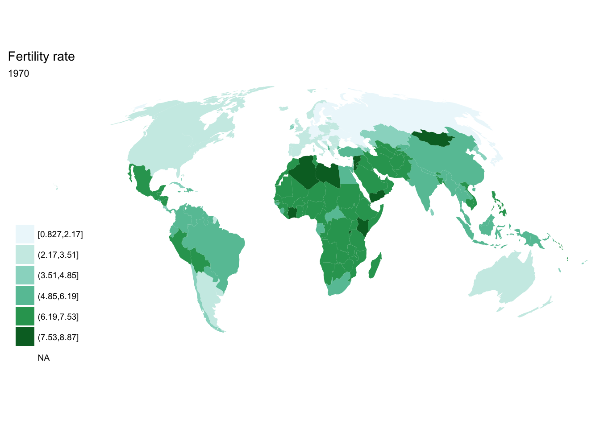
##
## [[2]]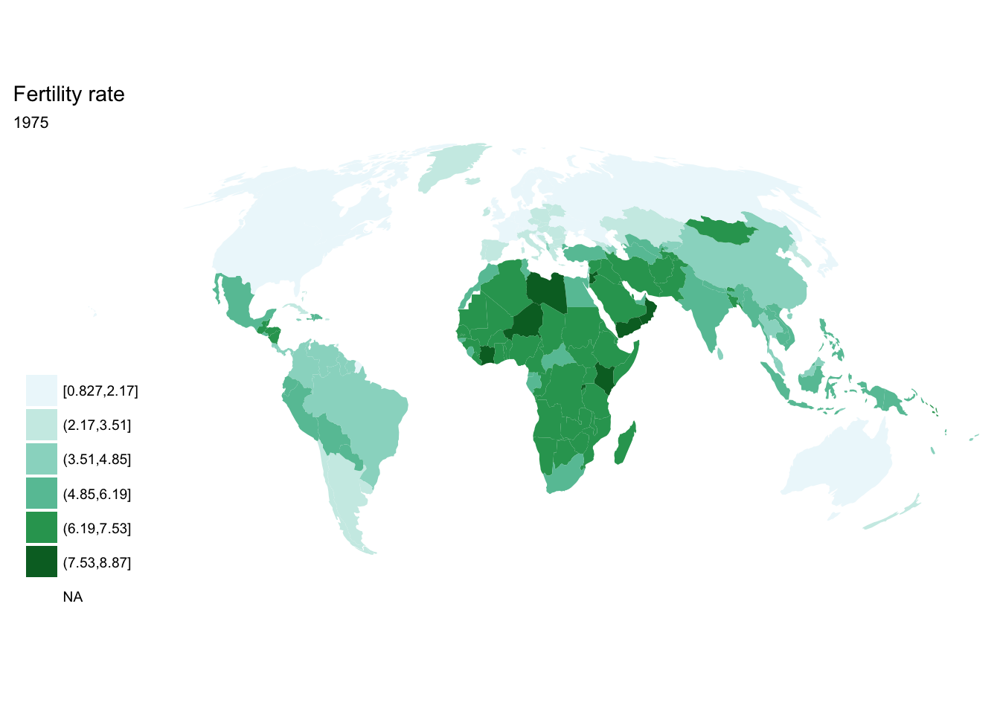
##
## [[3]]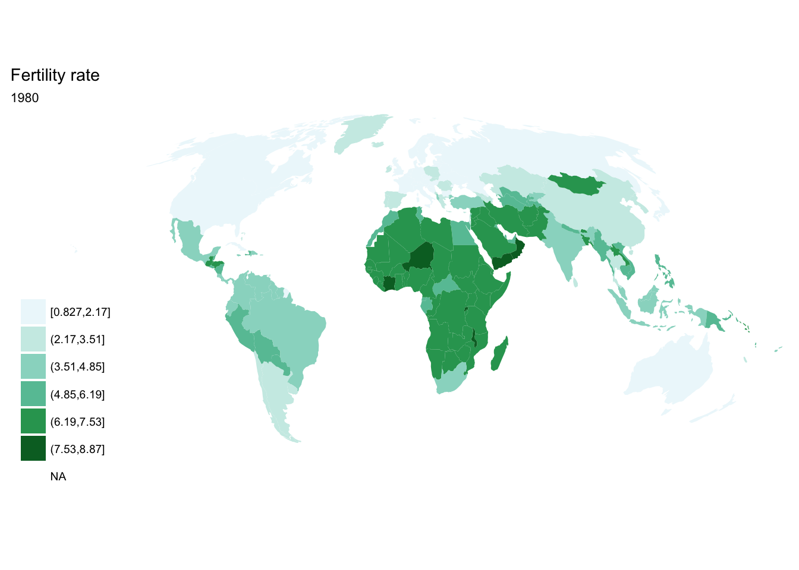
##
## [[4]]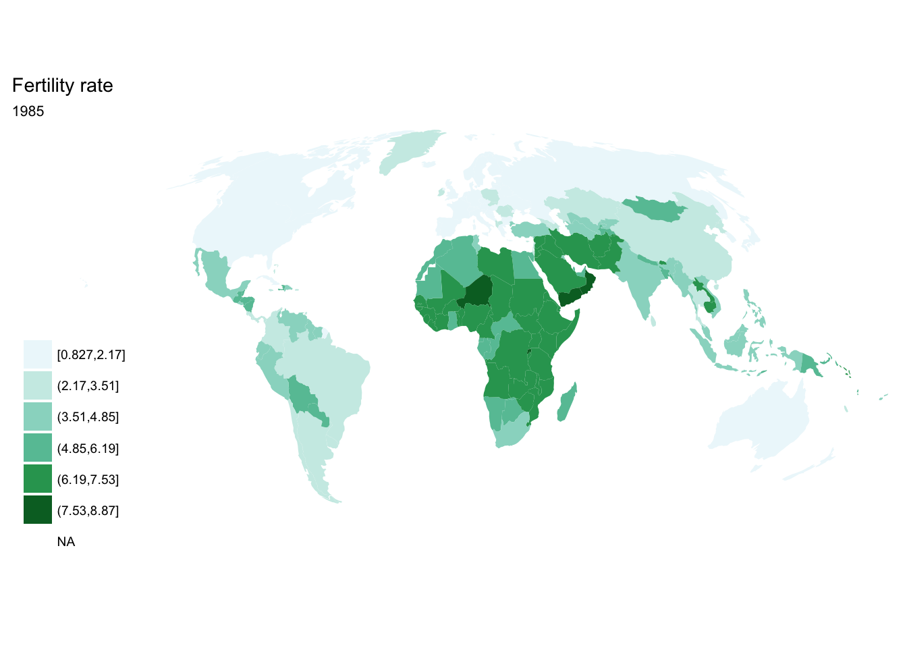
##
## [[5]]##
## [[6]]##
## [[7]]##
## [[8]]##
## [[9]]facet_wrap()
Or if we want them in a single image, we can use facet_wrap() or facet_grid() to draw the small multiples plot:
ggplot(fertility, aes(map_id = `Country Code`)) +
facet_wrap(~ year) +
geom_map(aes(fill = fertility_rate), map = world2) +
expand_limits(x = world2$long, y = world2$lat) +
scale_fill_brewer(palette = "BuGn") +
labs(title = "Fertility rate",
fill = NULL) +
ggthemes::theme_map() +
coord_map(projection = "mollweide", xlim = c(-180, 180)) +
theme(legend.position = "none")south_africa <- world2 %>%
filter(id == "ZAF")
fertility %>%
filter(`Country Name` == "South Africa") %>%
ggplot(aes(map_id = `Country Code`)) +
facet_wrap(~ year) +
geom_map(aes(fill = fertility_rate), map = south_africa) +
expand_limits(x = south_africa$long, y = south_africa$lat) +
scale_fill_brewer(palette = "BuGn") +
labs(title = "Fertility rate",
subtitle = "South Africa",
fill = NULL) +
ggthemes::theme_map() +
coord_map() +
theme(legend.position = "none")gganimate
Alternatively, we can make an animated visualization using the gganimate package. The major difference is that we now add a frame aesthetic which defines the variable we are using to animate the graph.
library(gganimate)
p <- ggplot(fertility, aes(map_id = `Country Code`, frame = year)) +
geom_map(aes(fill = fertility_rate), map = world2) +
expand_limits(x = world2$long, y = world2$lat) +
scale_fill_brewer(palette = "BuGn") +
labs(title = "Fertility rate",
fill = NULL) +
ggthemes::theme_map() +
coord_map(projection = "mollweide", xlim = c(-180, 180)) +
theme(legend.position = "none")
gganimate(p)Acknowledgments
Session Info
devtools::session_info()## setting value
## version R version 3.4.1 (2017-06-30)
## system x86_64, darwin15.6.0
## ui X11
## language (EN)
## collate en_US.UTF-8
## tz America/Chicago
## date 2017-11-07
##
## package * version date source
## assertthat 0.2.0 2017-04-11 CRAN (R 3.4.0)
## backports 1.1.0 2017-05-22 CRAN (R 3.4.0)
## base * 3.4.1 2017-07-07 local
## bindr 0.1 2016-11-13 CRAN (R 3.4.0)
## bindrcpp * 0.2 2017-06-17 CRAN (R 3.4.0)
## boxes 0.0.0.9000 2017-07-19 Github (r-pkgs/boxes@03098dc)
## broom * 0.4.2 2017-08-09 local
## cellranger 1.1.0 2016-07-27 CRAN (R 3.4.0)
## clisymbols 1.2.0 2017-05-21 cran (@1.2.0)
## codetools 0.2-15 2016-10-05 CRAN (R 3.4.1)
## colorspace 1.3-2 2016-12-14 CRAN (R 3.4.0)
## compiler 3.4.1 2017-07-07 local
## crayon 1.3.4 2017-10-03 Github (gaborcsardi/crayon@b5221ab)
## data.table 1.10.4 2017-02-01 CRAN (R 3.4.0)
## datasets * 3.4.1 2017-07-07 local
## devtools 1.13.3 2017-08-02 CRAN (R 3.4.1)
## digest 0.6.12 2017-01-27 CRAN (R 3.4.0)
## dplyr * 0.7.4.9000 2017-10-03 Github (tidyverse/dplyr@1a0730a)
## evaluate 0.10.1 2017-06-24 CRAN (R 3.4.1)
## fiftystater * 1.0.1 2016-11-14 CRAN (R 3.4.0)
## forcats * 0.2.0 2017-01-23 CRAN (R 3.4.0)
## foreign 0.8-69 2017-06-22 CRAN (R 3.4.1)
## gapminder * 0.2.0 2015-12-31 CRAN (R 3.4.0)
## geosphere 1.5-5 2016-06-15 CRAN (R 3.4.0)
## gganimate * 0.1.0.9000 2017-05-26 Github (dgrtwo/gganimate@bf82002)
## ggmap * 2.6.1 2016-01-23 CRAN (R 3.4.0)
## ggplot2 * 2.2.1 2016-12-30 CRAN (R 3.4.0)
## glue 1.1.1 2017-06-21 CRAN (R 3.4.1)
## graphics * 3.4.1 2017-07-07 local
## grDevices * 3.4.1 2017-07-07 local
## grid 3.4.1 2017-07-07 local
## gtable 0.2.0 2016-02-26 CRAN (R 3.4.0)
## haven 1.1.0 2017-07-09 CRAN (R 3.4.1)
## hms 0.3 2016-11-22 CRAN (R 3.4.0)
## htmltools 0.3.6 2017-04-28 CRAN (R 3.4.0)
## htmlwidgets 0.9 2017-07-10 CRAN (R 3.4.1)
## httr 1.3.1 2017-08-20 CRAN (R 3.4.1)
## jpeg 0.1-8 2014-01-23 CRAN (R 3.4.0)
## jsonlite 1.5 2017-06-01 CRAN (R 3.4.0)
## knitr * 1.17 2017-08-10 cran (@1.17)
## labeling 0.3 2014-08-23 CRAN (R 3.4.0)
## lattice 0.20-35 2017-03-25 CRAN (R 3.4.1)
## lazyeval 0.2.0 2016-06-12 CRAN (R 3.4.0)
## lubridate 1.6.0 2016-09-13 CRAN (R 3.4.0)
## magrittr 1.5 2014-11-22 CRAN (R 3.4.0)
## mapproj 1.2-5 2017-06-08 CRAN (R 3.4.0)
## maps * 3.2.0 2017-06-08 CRAN (R 3.4.0)
## maptools * 0.9-2 2017-03-25 CRAN (R 3.4.0)
## memoise 1.1.0 2017-04-21 CRAN (R 3.4.0)
## methods * 3.4.1 2017-07-07 local
## mnormt 1.5-5 2016-10-15 CRAN (R 3.4.0)
## modelr * 0.1.1 2017-08-10 local
## munsell 0.4.3 2016-02-13 CRAN (R 3.4.0)
## nlme 3.1-131 2017-02-06 CRAN (R 3.4.1)
## nycflights13 * 0.2.2 2017-01-27 CRAN (R 3.4.0)
## parallel 3.4.1 2017-07-07 local
## pkgconfig 2.0.1 2017-03-21 CRAN (R 3.4.0)
## plotly * 4.7.1 2017-07-29 CRAN (R 3.4.1)
## plyr 1.8.4 2016-06-08 CRAN (R 3.4.0)
## png 0.1-7 2013-12-03 CRAN (R 3.4.0)
## proto 1.0.0 2016-10-29 CRAN (R 3.4.0)
## psych 1.7.5 2017-05-03 CRAN (R 3.4.1)
## purrr * 0.2.3 2017-08-02 CRAN (R 3.4.1)
## R6 2.2.2 2017-06-17 CRAN (R 3.4.0)
## Rcpp 0.12.13 2017-09-28 cran (@0.12.13)
## readr * 1.1.1 2017-05-16 CRAN (R 3.4.0)
## readxl 1.0.0 2017-04-18 CRAN (R 3.4.0)
## reshape2 1.4.2 2016-10-22 CRAN (R 3.4.0)
## rgdal * 1.2-8 2017-07-01 CRAN (R 3.4.1)
## rgeos * 0.3-23 2017-04-06 CRAN (R 3.4.0)
## RgoogleMaps 1.4.1 2016-09-18 CRAN (R 3.4.0)
## rjson 0.2.15 2014-11-03 CRAN (R 3.4.0)
## rlang 0.1.2 2017-08-09 CRAN (R 3.4.1)
## rmarkdown 1.6 2017-06-15 CRAN (R 3.4.0)
## rprojroot 1.2 2017-01-16 CRAN (R 3.4.0)
## rstudioapi 0.6 2016-06-27 CRAN (R 3.4.0)
## rvest 0.3.2 2016-06-17 CRAN (R 3.4.0)
## scales 0.4.1 2016-11-09 CRAN (R 3.4.0)
## sp * 1.2-5 2017-06-29 CRAN (R 3.4.1)
## stats * 3.4.1 2017-07-07 local
## stringi 1.1.5 2017-04-07 CRAN (R 3.4.0)
## stringr * 1.2.0 2017-02-18 CRAN (R 3.4.0)
## tibble * 1.3.4 2017-08-22 CRAN (R 3.4.1)
## tidyr * 0.7.0 2017-08-16 CRAN (R 3.4.1)
## tidyverse * 1.1.1.9000 2017-07-19 Github (tidyverse/tidyverse@a028619)
## tools 3.4.1 2017-07-07 local
## utils * 3.4.1 2017-07-07 local
## viridisLite 0.2.0 2017-03-24 CRAN (R 3.4.0)
## withr 2.0.0 2017-07-28 CRAN (R 3.4.1)
## xml2 1.1.1 2017-01-24 CRAN (R 3.4.0)
## yaml 2.1.14 2016-11-12 CRAN (R 3.4.0)This work is licensed under the CC BY-NC 4.0 Creative Commons License.